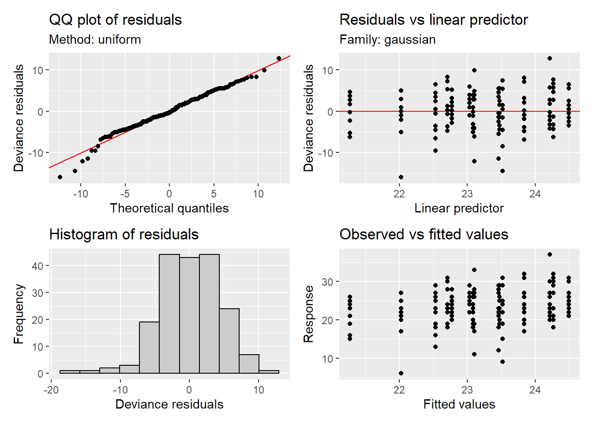

Mating behaviour analyses
Zajitschek et al.
2023-06-01
Last updated: 2023-06-26
Checks: 6 1
Knit directory:
Zajitschek_et_al_FunctionalEcology_2023/
This reproducible R Markdown analysis was created with workflowr (version 1.7.0). The Checks tab describes the reproducibility checks that were applied when the results were created. The Past versions tab lists the development history.
The R Markdown file has unstaged changes. To know which version of
the R Markdown file created these results, you’ll want to first commit
it to the Git repo. If you’re still working on the analysis, you can
ignore this warning. When you’re finished, you can run
wflow_publish to commit the R Markdown file and build the
HTML.
Great job! The global environment was empty. Objects defined in the global environment can affect the analysis in your R Markdown file in unknown ways. For reproduciblity it’s best to always run the code in an empty environment.
The command set.seed(20200903) was run prior to running
the code in the R Markdown file. Setting a seed ensures that any results
that rely on randomness, e.g. subsampling or permutations, are
reproducible.
Great job! Recording the operating system, R version, and package versions is critical for reproducibility.
Nice! There were no cached chunks for this analysis, so you can be confident that you successfully produced the results during this run.
Great job! Using relative paths to the files within your workflowr project makes it easier to run your code on other machines.
Great! You are using Git for version control. Tracking code development and connecting the code version to the results is critical for reproducibility.
The results in this page were generated with repository version 5a9dafb. See the Past versions tab to see a history of the changes made to the R Markdown and HTML files.
Note that you need to be careful to ensure that all relevant files for
the analysis have been committed to Git prior to generating the results
(you can use wflow_publish or
wflow_git_commit). workflowr only checks the R Markdown
file, but you know if there are other scripts or data files that it
depends on. Below is the status of the Git repository when the results
were generated:
Ignored files:
Ignored: .Rhistory
Ignored: .Rproj.user/
Untracked files:
Untracked: FecF1_compound.pdf
Untracked: FecF1_compound.png
Untracked: Sig_effects_on_male_mating_behaviour_F2_plots_w_means.pdf
Untracked: appraise.latF1mat.gamm1.png
Untracked: appraise.latF1mat.gamm1log.png
Untracked: data/fecF0.csv
Untracked: data/fecF1.csv
Untracked: data/malebehavF0.csv
Untracked: data/malebehavF1.csv
Untracked: data/malebehavF2.csv
Untracked: data/malebehavF3.csv
Untracked: data/survivalF1.csv
Untracked: fec.F1.plot.pdf
Untracked: latency_F0_mat_predicted.pdf
Untracked: male_latency_F2_mat_predicted.pdf
Untracked: male_latency_F2_pat_predicted.pdf
Untracked: male_mating_behaviour_F0_plots.pdf
Untracked: male_mating_behaviour_F0_plots.png
Untracked: plotF0_fecundity.pdf
Untracked: plotF0_fecundity.png
Untracked: plotF0_fecundity_rev.pdf
Untracked: plotF0_latency.pdf
Untracked: plotF0_latency.png
Untracked: plotF0_latencyTemponly.pdf
Untracked: plotF0_latencyTemponly.png
Untracked: plotF0_latency_rev.pdf
Untracked: plotF1_fecundity.pdf
Untracked: plotF1_fecundity.png
Untracked: plotF1_fecundity_mat.pdf
Untracked: plotF1_fecundity_mat_rev.pdf
Untracked: plotF1_fecundity_mat_rev_afterINK.pdf
Untracked: plotF1_fecundity_pat.pdf
Untracked: plotF1_fecundity_pat_rev.pdf
Untracked: plotF1_fecundity_pat_rev_aftterINK.pdf
Untracked: plotF1_latency.pdf
Untracked: plotF1_latency.png
Untracked: plotF1pat_duration.pdf
Untracked: plotF1pat_duration.png
Untracked: plotF1pat_duration_rev.pdf
Untracked: plotF2_mat+pat_latency+dur.png
Untracked: plotF2_mat_latency.pdf
Untracked: plotF2_mat_latency.png
Untracked: plotF2_mat_latency_rev.pdf
Untracked: plotF2_pat_dur.pdf
Untracked: plotF2_pat_dur.png
Untracked: plotF2_pat_dur_rev.pdf
Untracked: survivalcurves.pdf
Untracked: survivalcurves.png
Untracked: survivalcurves8-6-21.pdf
Untracked: survivalcurves8-6-21.png
Untracked: survivalcurves_rev20-3-2023.jpg
Untracked: survivalcurves_rev20-3-2023.pdf
Untracked: survivalcurves_rev20-3-2023.svg
Untracked: survivalcurves_rev20-3-2023_afterINK.pdf
Unstaged changes:
Modified: _workflowr.yml
Modified: analysis/fecundity.Rmd
Modified: analysis/matingbehaviour.Rmd
Modified: analysis/survival.Rmd
Modified: data/survival.csv
Note that any generated files, e.g. HTML, png, CSS, etc., are not included in this status report because it is ok for generated content to have uncommitted changes.
These are the previous versions of the repository in which changes were
made to the R Markdown (analysis/matingbehaviour.Rmd) and
HTML (docs/matingbehaviour.html) files. If you’ve
configured a remote Git repository (see ?wflow_git_remote),
click on the hyperlinks in the table below to view the files as they
were in that past version.
| File | Version | Author | Date | Message |
|---|---|---|---|---|
| html | 5a9dafb | zajitschek | 2023-06-25 | Build site. |
| Rmd | b9f595a | zajitschek | 2023-06-25 | 25-6-2023 |
Load libraries
library(readr) # read data
library(dplyr) # data structure
library(reshape2) # data structure
library(rcompanion) # mean and median (+- bootstrapped CI)
library(ggplot2) # plot
library(sjPlot) # model plots & diagnostics
library(grid) # figure arrangement
library(gtable) # figure arrangement
library(gridExtra) # figure arrangement
library(lme4) # linear mixed models (LMM)
library(lmerTest) # significance testing for LMM
library(multcomp) # multiple comparison correction
library(lsmeans)
library(pbkrtest)
library(predictmeans) #diagnostic plots for (g)lmer: residplot
library(gamm4) # additive mixed models
library(robustbase)
library(effects)
library(MuMIn)
library(gratia) # diagnostics of gam models
library(DHARMa)
library(splines)Load male mating behaviour data (parental generation F0, F1, F2, and F3)
# F0 male mating behaviour
mb.f0 <- read_csv("./data/malebehavF0.csv")
mb.f0a <- mb.f0[1:210, ]
mb.f0a$treat <- interaction(mb.f0a$diet, mb.f0a$temp)
mb.f0a$tray <- interaction(mb.f0a$treat, ifelse(mb.f0a$male_id < 8, c("a"), c("b")) )
mb.f0a$male_id <- factor(mb.f0a$male_id)
mb.f0a$diet_fac <- factor(mb.f0a$diet)
mb.f0a$temp_fac <- factor(mb.f0a$temp)
mb.f0a$replicate_vial_sep <- interaction(mb.f0a$treat, mb.f0a$replicate_vial)
mb.f0a$indobs <- factor(1:nrow(mb.f0a))
# F1 male mating behaviour
mb.f1 <- read_csv("./data/malebehavF1.csv")
mb.f1a <- mb.f1
mb.f1a$treat <- interaction(mb.f1a$parental_effects, mb.f1a$parental_diet, mb.f1a$parental_temp)
mb.f1a$tray <- interaction(mb.f1a$treat, ifelse(mb.f1a$male_id < 8, c("a"), c("b")) )
mb.f1a$male_id <- factor(mb.f1a$male_id)
mb.f1a$parental_diet_fac <- factor(mb.f1a$parental_diet)
mb.f1a$parental_temp_fac <- factor(mb.f1a$parental_temp)
mb.f1a$replicate_vial_sep <- interaction(mb.f1a$treat, mb.f1a$replicate_vial)
mb.f1a$indobs <- factor(1:nrow(mb.f1a))
mb.f1.analysis <- mb.f1a %>%
filter(!is.na(latency_to_mate))
# F2 male mating behaviour
mb.f2 <- read.csv("./data/malebehavF2.csv")
mb.f2a <- mb.f2
mb.f2a$treat <- interaction(mb.f2a$parental_effects, mb.f2a$parental_diet, mb.f2a$parental_temp)
mb.f2a$tray <- interaction(mb.f2a$treat, ifelse(mb.f2a$male_id < 8, c("a"), c("b")) )
mb.f2a$male_id <- factor(mb.f2a$male_id)
mb.f2a$parental_diet_fac <- factor(mb.f2a$parental_diet)
mb.f2a$parental_temp_fac <- factor(mb.f2a$parental_temp)
mb.f2a$replicate_vial_sep <- interaction(mb.f2a$treat, mb.f2a$replicate_vial)
mb.f2a$indobs <- factor(1:nrow(mb.f2a))
# F3 male mating behaviour
mb.f3 <- read.csv("./data/malebehavF3.csv")
mb.f3a <- mb.f3
mb.f3a$treat <- interaction(mb.f3a$parental_effects, mb.f3a$parental_diet, mb.f3a$parental_temp)
mb.f3a$tray <- interaction(mb.f3a$treat, ifelse(mb.f3a$male_id < 8, c("a"), c("b")) )
mb.f3a$male_id <- factor(mb.f3a$male_id)
mb.f3a$parental_diet_fac <- factor(mb.f3a$parental_diet)
mb.f3a$parental_temp_fac <- factor(mb.f3a$parental_temp)
mb.f3a$replicate_vial_sep <- interaction(mb.f3a$treat, mb.f3a$replicate_vial)
mb.f3a$indobs <- factor(1:nrow(mb.f3a))Data for latency to mate and mating duration in F0
mb.f0 <- mb.f0a %>%
filter(!is.na(latency_to_mate)) %>%
group_by(temp_fac, diet_fac) %>%
summarise(mean_latency_to_mate = mean(latency_to_mate, na.rm = TRUE),
sd_latency_to_mate = sd(latency_to_mate),
n_latency_to_mate = n(),
SE_latency_to_mate = sd(latency_to_mate)/sqrt(n()),
mean_mating_duration = mean(mating_duration, na.rm = TRUE),
sd_mating_duration = sd(mating_duration),
n_mating_duration = n(),
SE_mating_duration = sd(mating_duration)/sqrt(n()))
print(mb.f0, n= 30)# A tibble: 15 × 10
# Groups: temp_fac [5]
temp_fac diet_fac mean_latency_to_mate sd_latency_to_mate n_latency_to_mate
<fct> <fct> <dbl> <dbl> <int>
1 21 0.4 21.9 17.4 14
2 21 1 27.8 39.0 13
3 21 1.5 16 8.59 11
4 23 0.4 57 51.7 11
5 23 1 30.3 27.0 13
6 23 1.5 32.8 34.9 13
7 25 0.4 39.6 46.3 14
8 25 1 48.7 57.5 13
9 25 1.5 50.1 30.9 14
10 27 0.4 56.8 51.7 12
11 27 1 18.5 11.1 11
12 27 1.5 54.4 46.0 14
13 29 0.4 48 44.9 12
14 29 1 53.4 32.6 11
15 29 1.5 80.7 49.7 13
# ℹ 5 more variables: SE_latency_to_mate <dbl>, mean_mating_duration <dbl>,
# sd_mating_duration <dbl>, n_mating_duration <int>, SE_mating_duration <dbl>Data for F0 mating success
mb.f0.yn <- mb.f0a %>%
group_by(temp_fac, diet_fac) %>%
summarise(mating_success = sum(mated == "yes") / 14) `summarise()` has grouped output by 'temp_fac'. You can override using the
`.groups` argument.print(mb.f0.yn, n= 60)# A tibble: 15 × 3
# Groups: temp_fac [5]
temp_fac diet_fac mating_success
<fct> <fct> <dbl>
1 21 0.4 1
2 21 1 0.929
3 21 1.5 0.786
4 23 0.4 0.786
5 23 1 0.929
6 23 1.5 0.929
7 25 0.4 1
8 25 1 0.929
9 25 1.5 1
10 27 0.4 0.857
11 27 1 0.786
12 27 1.5 1
13 29 0.4 0.857
14 29 1 0.786
15 29 1.5 0.929MALE MATING BEHAVIOUR ANALYSES
F0 MALE MATING BEHAVIOUR
F0 Latency to mate, GAMM: model comparison (table S10) and results (inspect code for model specifications)
mb.f0.analysis <- mb.f0a %>%
filter(!is.na(latency_to_mate))
# Full model: residuals are right-skewed
matlatF0.gamm0 <- gamm4(latency_to_mate ~ s(temp, k= 5, by= diet_fac, bs="cr") + diet_fac, random= ~ (1|replicate_vial_sep), data= mb.f0.analysis )
# Diagnostic plot
appraise(matlatF0.gamm0$gam)# Better with log-transformed response
matlatF0.gamm1 <- gamm4(log(latency_to_mate) ~ s(temp, k= 5, by= diet_fac, bs="cr") + diet_fac, random= ~ (1|replicate_vial_sep), data= mb.f0.analysis )
# Diagnostic plot
appraise(matlatF0.gamm1$gam)# Model without linear diet term
matlatF0.gamm1b <- gamm4(log(latency_to_mate) ~ s(temp, k= 5, by= diet_fac, bs="cr"), random= ~ (1|replicate_vial_sep), data= mb.f0.analysis )
# Model without diet-specific smooth terms
matlatF0.gamm2 <- gamm4(log(latency_to_mate) ~s(temp, k= 5, bs="cr") + diet_fac, random= ~ (1|replicate_vial_sep), data= mb.f0.analysis)
# Model without any diet effects
matlatF0.gamm3 <- gamm4(log(latency_to_mate) ~s(temp, k= 5, bs="cr"),
random= ~ (1|replicate_vial_sep), data= mb.f0.analysis)
# Model with linear temperature term only
matlatF0.gamm3b <- gamm4(log(latency_to_mate) ~ temp,
random= ~ (1|replicate_vial_sep), data= mb.f0.analysis)
# Model with linear temperature and diet terms only
matlatF0.gamm3c <- gamm4(log(latency_to_mate) ~ temp*diet,
random= ~ (1|replicate_vial_sep), data= mb.f0.analysis)
matlatF0.gamm.null <- gamm4(log(latency_to_mate) ~ 1,
random= ~ (1|replicate_vial_sep), data= mb.f0.analysis )
# AIC model table (Table S10)
model.sel(matlatF0.gamm1$mer, matlatF0.gamm1b$mer, matlatF0.gamm2$mer, matlatF0.gamm3$mer, matlatF0.gamm3b$mer, matlatF0.gamm3c$mer, matlatF0.gamm.null$mer, rank = AIC)Model selection table
X random df logLik AIC delta weight
matlatF0.gamm3$mer X+r_v_s 5 -253.637 517.3 0.00 0.575
matlatF0.gamm3b$mer r_v_s 4 -255.482 519.0 1.69 0.247
matlatF0.gamm1b$mer X+X.0+X.1+r_v_s 9 -251.681 521.4 4.09 0.074
matlatF0.gamm2$mer X+r_v_s 7 -254.008 522.0 4.74 0.054
matlatF0.gamm.null$mer 3.299 r_v_s 3 -258.691 523.4 6.11 0.027
matlatF0.gamm3c$mer r_v_s 6 -256.240 524.5 7.21 0.016
matlatF0.gamm1$mer X+X.0+X.1+r_v_s 11 -252.108 526.2 8.94 0.007
Models ranked by AIC(x)
Random terms:
X : 1 | Xr
r_v_s: 1 | replicate_vial_sep
X.0 : 1 | Xr.0
X.1 : 1 | Xr.1summary(matlatF0.gamm3$gam)
Family: gaussian
Link function: identity
Formula:
log(latency_to_mate) ~ s(temp, k = 5, bs = "cr")
Parametric coefficients:
Estimate Std. Error t value Pr(>|t|)
(Intercept) 3.29897 0.07507 43.94 <2e-16 ***
---
Signif. codes: 0 '***' 0.001 '**' 0.01 '*' 0.05 '.' 0.1 ' ' 1
Approximate significance of smooth terms:
edf Ref.df F p-value
s(temp) 1 1 14.29 0.000211 ***
---
Signif. codes: 0 '***' 0.001 '**' 0.01 '*' 0.05 '.' 0.1 ' ' 1
R-sq.(adj) = 0.0829
lmer.REML = 507.27 Scale est. = 0.80776 n = 189Plot Figure 5
# Fitted.values(matlatF0.gamm3$gam)
x_latF0dat <- data.frame(temp = seq(21, 29, length.out = 100))
pred_latF0dat <- predict(matlatF0.gamm3$gam, x_latF0dat, se.fit = TRUE)
new_latF0dat <- cbind(x_latF0dat, pred_latF0dat)
# Calculate CIs
new_latF0dat <- within(new_latF0dat, {
lower = fit - 1.96*se.fit
upper = fit + 1.96*se.fit
fit_orig = exp(fit)
lower_orig = exp(lower)
upper_orig = exp(upper)
})
latF0_gamm3_plot <- ggplot(new_latF0dat, aes(x = temp, y = fit_orig)) +
geom_point(data = mb.f0.analysis, aes(x = temp, y = latency_to_mate, color = factor(diet), shape = factor(diet)), size = 3.2, alpha = 0.6, position= position_jitterdodge(dodge.width = 0.8, jitter.width = 0.1)) +
geom_ribbon(aes(ymin = lower_orig, ymax = upper_orig), alpha=0.1) +
geom_line(size = 1.1) +
scale_x_continuous(breaks=c(21, 23, 25, 27, 29)) +
scale_color_manual(name ="Diet", values=c("#F8766D", "#619CFF", "#00BA38"), labels=c("restricted", "standard", "rich")) +
scale_fill_manual(name ="Diet", values=c("#F8766D", "#619CFF", "#00BA38"), labels=c("restricted", "standard", "rich")) +
scale_shape_discrete(name ="Diet", labels=c("restricted", "standard", "rich")) +
labs(title = "", color = "Diet", y = "Latency to mate [min]", x = "Temperature [degree Celsius]") + theme_classic(base_size = 23) Warning: Using `size` aesthetic for lines was deprecated in ggplot2 3.4.0.
ℹ Please use `linewidth` instead.
This warning is displayed once every 8 hours.
Call `lifecycle::last_lifecycle_warnings()` to see where this warning was
generated.latF0_gamm3_plot
F0 Mating duration, GAMM: model comparison (Table S11; inspect code for model specifications)
# Full model
matdurF0.gamm1 <- gamm4(mating_duration ~s(temp, k= 5, by= diet_fac, bs="cr") + diet_fac, random= ~ (1|replicate_vial_sep), data= mb.f0.analysis)
appraise(matdurF0.gamm1$gam)
# Model without diet-specific smooth terms
matdurF0.gamm2 <- gamm4(mating_duration ~s(temp, k= 5, bs="cr") + diet_fac,
random= ~ (1|replicate_vial_sep), data= mb.f0.analysis)
# Model without any diet effects
matdurF0.gamm3 <- gamm4(mating_duration ~s(temp, k= 5, bs="cr"),
random= ~ (1|replicate_vial_sep), data= mb.f0.analysis)
# Model with linear temperature term only
matdurF0.gamm3b <- gamm4(mating_duration ~ temp,
random= ~ (1|replicate_vial_sep), data= mb.f0.analysis)
# Null model
matdurF0.gamm.null <- gamm4(mating_duration ~ 1,
random= ~ (1|replicate_vial_sep), data= mb.f0.analysis )
# AIC model table (Table S11)
model.sel(matdurF0.gamm1$mer, matdurF0.gamm2$mer, matdurF0.gamm3$mer, matdurF0.gamm3b$mer, matdurF0.gamm.null$mer, rank = AIC)Model selection table
X random df logLik AIC delta weight
matdurF0.gamm.null$mer 23.17 r_v_s 3 -551.773 1109.5 0.00 0.385
matdurF0.gamm1$mer X+X.0+X.1+r_v_s 11 -544.020 1110.0 0.49 0.301
matdurF0.gamm3$mer X+r_v_s 5 -550.745 1111.5 1.94 0.146
matdurF0.gamm2$mer X+r_v_s 7 -548.915 1111.8 2.28 0.123
matdurF0.gamm3b$mer r_v_s 4 -552.892 1113.8 4.24 0.046
Models ranked by AIC(x)
Random terms:
r_v_s: 1 | replicate_vial_sep
X : 1 | Xr
X.0 : 1 | Xr.0
X.1 : 1 | Xr.1F0 Mating success, GAMM: model comparison (Table S12; inspect code for model specifications)
# Full model
matsucF0.gamm1 <- gamm4(factor(mated) ~s(temp, k= 5, by= diet_fac, bs="cr") + diet_fac, family= binomial, random= ~ (1|replicate_vial_sep) + (1|indobs), data= mb.f0a )
# Model without diet-specific smooth terms
matsucF0.gamm2 <- gamm4(factor(mated) ~s(temp, k= 5, bs="cr") + diet_fac,
family= binomial, random= ~ (1|replicate_vial_sep) + (1|indobs), data= mb.f0a )
matsucF0.gamm2b <- gamm4(factor(mated) ~ temp*diet_fac,
family= binomial, random= ~ (1|replicate_vial_sep) + (1|indobs), data= mb.f0a )
# Model without any diet effects
matsucF0.gamm3 <- gamm4(factor(mated) ~s(temp, k= 5, bs="cr"),
family= binomial, random= ~ (1|replicate_vial_sep) + (1|indobs), data= mb.f0a )
# Model with linear temperature term only
matsucF0.gamm3b <- gamm4(factor(mated) ~ temp,
family= binomial, random= ~ (1|replicate_vial_sep) + (1|indobs), data= mb.f0a )
# Null model
matsucF0.gamm.null <- gamm4(factor(mated) ~ 1,
family= binomial, random= ~ (1|replicate_vial_sep) + (1|indobs), data= mb.f0a )
# AIC model table (Table S12)
model.sel(matsucF0.gamm1$mer, matsucF0.gamm2$mer, matsucF0.gamm2b$mer, matsucF0.gamm3$mer, matsucF0.gamm3b$mer, matsucF0.gamm.null$mer, rank = AIC)Model selection table
X random df logLik AIC delta weight
matsucF0.gamm.null$mer 12.81 r_v_s+i 3 -32.817 71.6 0.00 0.88
matsucF0.gamm3$mer X+r_v_s+i 5 -32.811 75.6 3.99 0.12
matsucF0.gamm1$mer X+X.0+X.1+r_v_s+i 11 -32.670 87.3 15.70 0.00
matsucF0.gamm3b$mer r_v_s+i 4 -68.055 144.1 72.48 0.00
matsucF0.gamm2b$mer r_v_s+i 8 -64.649 145.3 73.66 0.00
matsucF0.gamm2$mer X+r_v_s+i 7 -67.401 148.8 77.17 0.00
Models ranked by AIC(x)
Random terms:
r_v_s: 1 | replicate_vial_sep
i : 1 | indobs
X : 1 | Xr
X.0 : 1 | Xr.0
X.1 : 1 | Xr.1F1 MALE MATING BEHAVIOUR
F1 Latency to mate
Maternal effects on F1 offspring: Latency to mate (Table S13)
# Full model
latF1mat.gamm1 <- gamm4(latency_to_mate ~s(parental_temp, k= 5, by= parental_diet_fac, bs="cr") + parental_diet_fac, random= ~ (1|replicate_vial_sep), data= subset(mb.f1.analysis, parental_effects== "mat"))
appraise(latF1mat.gamm1$gam)
latF1mat.gamm1log <- gamm4(log(latency_to_mate) ~s(parental_temp, k= 5, by= parental_diet_fac, bs="cr") + parental_diet_fac, random= ~ (1|replicate_vial_sep), data= subset(mb.f1.analysis, parental_effects== "mat"))
appraise(latF1mat.gamm1log$gam)# Model without diet-specific smooth terms
latF1mat.gamm2 <- gamm4(log(latency_to_mate) ~ s(parental_temp, k= 5, bs="cr") + parental_diet_fac, random= ~ (1|replicate_vial_sep), data= subset(mb.f1.analysis, parental_effects== "mat"))
# Model without any diet effects
latF1mat.gamm3 <- gamm4(log(latency_to_mate) ~ s(parental_temp, k= 5, bs="cr"), random= ~ (1|replicate_vial_sep), data= subset(mb.f1.analysis, parental_effects== "mat"))
# Model with linear temperature term only
latF1mat.gamm3b <- gamm4(log(latency_to_mate) ~ parental_temp, random= ~ (1|replicate_vial_sep), data= subset(mb.f1.analysis, parental_effects== "mat"))
# Null model
latF1mat.gamm.null <- gamm4(log(latency_to_mate) ~ 1, random= ~ (1|replicate_vial_sep), data= subset(mb.f1.analysis, parental_effects== "mat"))
# AIC model table (Table S13)
model.sel(latF1mat.gamm1log$mer, latF1mat.gamm2$mer, latF1mat.gamm3$mer, latF1mat.gamm3b$mer, latF1mat.gamm.null$mer, rank = AIC)Model selection table
X random df logLik AIC delta weight
latF1mat.gamm.null$mer 3.279 r_v_s 3 -227.068 460.1 0.00 0.884
latF1mat.gamm3$mer X+r_v_s 5 -227.513 465.0 4.89 0.077
latF1mat.gamm3b$mer r_v_s 4 -229.358 466.7 6.58 0.033
latF1mat.gamm2$mer X+r_v_s 7 -228.000 470.0 9.86 0.006
latF1mat.gamm1log$mer X+X.0+X.1+r_v_s 11 -227.023 476.0 15.91 0.000
Models ranked by AIC(x)
Random terms:
r_v_s: 1 | replicate_vial_sep
X : 1 | Xr
X.0 : 1 | Xr.0
X.1 : 1 | Xr.1Paternal effects on F1 offspring: Latency to mate (Table S16)
# Full model, untransformed response
latF1pat.gamm0 <- gamm4(latency_to_mate ~s(parental_temp, k= 5, by= parental_diet_fac, bs="cr") + parental_diet_fac, random= ~ (1|replicate_vial_sep), data= subset(mb.f1.analysis, parental_effects== "pat"))
appraise(latF1pat.gamm0$gam) # Full model, log-transformed response
latF1pat.gamm1 <- gamm4(log(latency_to_mate) ~s(parental_temp, k= 5, by= parental_diet_fac, bs="cr") + parental_diet_fac, random= ~ (1|replicate_vial_sep), data= subset(mb.f1.analysis, parental_effects== "pat"))
appraise(latF1pat.gamm1$gam)# Model without diet-specific smooth terms
latF1pat.gamm2 <- gamm4(log(latency_to_mate) ~ s(parental_temp, k= 5, bs="cr") + parental_diet_fac, random= ~ (1|replicate_vial_sep), data= subset(mb.f1.analysis, parental_effects== "pat"))
# Model without any diet effects
latF1pat.gamm3 <- gamm4(log(latency_to_mate) ~ s(parental_temp, k= 5, bs="cr"), random= ~ (1|replicate_vial_sep), data= subset(mb.f1.analysis, parental_effects== "pat"))
# Model with linear temperature term only
latF1pat.gamm3b <- gamm4(log(latency_to_mate) ~ parental_temp, random= ~ (1|replicate_vial_sep), data= subset(mb.f1.analysis, parental_effects== "pat"))
# Null model
latF1pat.gamm.null <- gamm4(log(latency_to_mate) ~ 1, random= ~ (1|replicate_vial_sep), data= subset(mb.f1.analysis, parental_effects== "pat"))
# AIC model table (Table S16)
model.sel(latF1pat.gamm1$mer, latF1pat.gamm2$mer, latF1pat.gamm3$mer, latF1pat.gamm3b$mer, latF1pat.gamm.null$mer, rank = AIC)Model selection table
X random df logLik AIC delta weight
latF1pat.gamm.null$mer 3.139 r_v_s 3 -253.613 513.2 0.00 0.797
latF1pat.gamm3$mer X+r_v_s 5 -253.365 516.7 3.50 0.138
latF1pat.gamm3b$mer r_v_s 4 -255.212 518.4 5.20 0.059
latF1pat.gamm2$mer X+r_v_s 7 -254.718 523.4 10.21 0.005
latF1pat.gamm1$mer X+X.0+X.1+r_v_s 11 -254.297 530.6 17.37 0.000
Models ranked by AIC(x)
Random terms:
r_v_s: 1 | replicate_vial_sep
X : 1 | Xr
X.0 : 1 | Xr.0
X.1 : 1 | Xr.1F1 Mating duration
F1 Mating duration, maternal effects (Table S14)
# Full model
durF1mat.gamm1 <- gamm4(mating_duration ~s(parental_temp, k= 5, by= parental_diet_fac, bs="cr") + parental_diet_fac, random= ~ (1|replicate_vial_sep), data= subset(mb.f1.analysis, parental_effects== "mat"))
draw(durF1mat.gamm1$gam)appraise(durF1mat.gamm1$gam)# Model without diet-specific smooth terms
durF1mat.gamm2 <- gamm4(mating_duration ~ s(parental_temp, k= 5, bs="cr") + parental_diet_fac, random= ~ (1|replicate_vial_sep), data= subset(mb.f1.analysis, parental_effects== "mat"))
# Model without any diet effects
durF1mat.gamm3 <- gamm4(mating_duration ~ s(parental_temp, k= 5, bs="cr"), random= ~ (1|replicate_vial_sep), data= subset(mb.f1.analysis, parental_effects== "mat"))
# Model with linear temperature term only
durF1mat.gamm3b <- gamm4(mating_duration ~ parental_temp, random= ~ (1|replicate_vial_sep), data= subset(mb.f1.analysis, parental_effects== "mat"))
# Null model
durF1mat.gamm.null <- gamm4(mating_duration ~ 1, random= ~ (1|replicate_vial_sep), data= subset(mb.f1.analysis, parental_effects== "mat"))
# AIC model table (Table S14)
model.sel(durF1mat.gamm1$mer, durF1mat.gamm2$mer, durF1mat.gamm3$mer, durF1mat.gamm3b$mer, durF1mat.gamm.null$mer, rank = AIC)Model selection table
X random df logLik AIC delta weight
durF1mat.gamm1$mer X+X.0+X.1+r_v_s 11 -501.147 1024.3 0.00 0.497
durF1mat.gamm.null$mer 24.2 r_v_s 3 -509.816 1025.6 1.34 0.255
durF1mat.gamm2$mer X+r_v_s 7 -506.611 1027.2 2.93 0.115
durF1mat.gamm3$mer X+r_v_s 5 -508.821 1027.6 3.35 0.093
durF1mat.gamm3b$mer r_v_s 4 -510.665 1029.3 5.04 0.040
Models ranked by AIC(x)
Random terms:
X : 1 | Xr
X.0 : 1 | Xr.0
X.1 : 1 | Xr.1
r_v_s: 1 | replicate_vial_sepF1 Mating duration, paternal effects (Table S17)
# Full model, untransformed response
durF1pat.gamm1 <- gamm4(mating_duration ~s(parental_temp, k= 5, by= parental_diet_fac, bs="cr") + parental_diet_fac, random= ~ (1|replicate_vial_sep), data= subset(mb.f1.analysis, parental_effects== "pat"))
appraise(durF1pat.gamm1$gam) # Model without diet-specific smooth terms
durF1pat.gamm2 <- gamm4(mating_duration ~ s(parental_temp, k= 5, bs="cr") + parental_diet_fac, random= ~ (1|replicate_vial_sep), data= subset(mb.f1.analysis, parental_effects== "pat"))
# Model without any diet effects
durF1pat.gamm3 <- gamm4(mating_duration ~ s(parental_temp, k= 5, bs="cr"), random= ~ (1|replicate_vial_sep), data= subset(mb.f1.analysis, parental_effects== "pat"))
# Model with linear temperature term only
durF1pat.gamm3b <- gamm4(mating_duration ~ parental_temp, random= ~ (1|replicate_vial_sep), data= subset(mb.f1.analysis, parental_effects== "pat"))
# Null model
durF1pat.gamm.null <- gamm4(mating_duration ~ 1, random= ~ (1|replicate_vial_sep), data= subset(mb.f1.analysis, parental_effects== "pat"))
# AIC model table (Table S17)
model.sel(durF1pat.gamm1$mer, durF1pat.gamm2$mer, durF1pat.gamm3$mer, durF1pat.gamm3b$mer, durF1pat.gamm.null$mer, rank = AIC)Model selection table
X random df logLik AIC delta weight
durF1pat.gamm2$mer X+r_v_s 7 -530.047 1074.1 0.00 0.542
durF1pat.gamm3$mer X+r_v_s 5 -532.892 1075.8 1.69 0.233
durF1pat.gamm1$mer X+X.0+X.1+r_v_s 11 -527.381 1076.8 2.67 0.143
durF1pat.gamm.null$mer 24.23 r_v_s 3 -536.341 1078.7 4.59 0.055
durF1pat.gamm3b$mer r_v_s 4 -536.007 1080.0 5.92 0.028
Models ranked by AIC(x)
Random terms:
X : 1 | Xr
r_v_s: 1 | replicate_vial_sep
X.0 : 1 | Xr.0
X.1 : 1 | Xr.1summary(durF1pat.gamm3$gam)
Family: gaussian
Link function: identity
Formula:
mating_duration ~ s(parental_temp, k = 5, bs = "cr")
Parametric coefficients:
Estimate Std. Error t value Pr(>|t|)
(Intercept) 24.2312 0.4004 60.52 <2e-16 ***
---
Signif. codes: 0 '***' 0.001 '**' 0.01 '*' 0.05 '.' 0.1 ' ' 1
Approximate significance of smooth terms:
edf Ref.df F p-value
s(parental_temp) 2.75 2.75 3.712 0.0485 *
---
Signif. codes: 0 '***' 0.001 '**' 0.01 '*' 0.05 '.' 0.1 ' ' 1
R-sq.(adj) = 0.0456
lmer.REML = 1065.8 Scale est. = 27.737 n = 173Plot Figure 6: Male mating duration F1, paternal effects
# Create new data for predictions
x_durF1dat <- data.frame(parental_temp = seq(21, 29, length.out = 100))
pred_durF1patdat <- predict(durF1pat.gamm3$gam, x_durF1dat, se.fit = TRUE)
new_durF1patdat <- cbind(x_durF1dat, pred_durF1patdat)
# Calculate CIs
new_durF1patdat <- data.frame(new_durF1patdat,
mu = new_durF1patdat$fit,
lower = new_durF1patdat$fit - 1.96 * new_durF1patdat$se.fit,
higher = new_durF1patdat$fit + 1.96 * new_durF1patdat$se.fit)
# Plot Figure 5
predDurF1pat_plot <- ggplot(new_durF1patdat) +
geom_point(data= subset(mb.f1.analysis, parental_effects== "pat"), aes(x = parental_temp, y = mating_duration, color = factor(parental_diet), shape = factor(parental_diet)), size = 3.2, alpha = 0.6, position= position_jitterdodge(dodge.width = 0.8, jitter.width = 0.1), show.legend = TRUE) +
geom_smooth(aes(ymin = lower, ymax = higher, x = parental_temp, y = fit), stat = "identity", alpha = 0.1, color = "black", size = 1.1, show.legend = FALSE) +
scale_x_continuous(breaks=c(21, 23, 25, 27, 29)) +
scale_color_manual(name ="Paternal diet", values=c("#F8766D", "#619CFF", "#00BA38"), labels=c("restricted", "standard", "rich")) +
scale_fill_manual(name ="Paternal diet", values=c("#F8766D", "#619CFF", "#00BA38"), labels=c("restricted", "standard", "rich")) +
scale_shape_discrete(name ="Paternal diet", labels=c("restricted", "standard", "rich")) +
# scale_color_manual(values=c("#F8766D", "#619CFF", "#00BA38")) +
# scale_fill_manual(values=c("#F8766D", "#619CFF", "#00BA38")) +
labs(title = "", color = "Paternal diet", y = "Mating duration [min]", x = "Temperature [degree Celsius]") + theme_classic(base_size = 23)
predDurF1pat_plotF1 Male mating success
F1 Mating success, maternal effects (Table S15)
matsucF1mat.gamm1 <- gamm4(factor(mated) ~s(parental_temp, k= 5, by= parental_diet_fac) + parental_diet_fac, family= binomial, random= ~ (1|replicate_vial_sep) + (1|indobs), data= subset(mb.f1a, parental_effects== "mat") )
appraise(latF1mat.gamm1$gam)# Model without diet-specific smooth terms
matsucF1mat.gamm2 <- gamm4(factor(mated) ~s(parental_temp, k= 5) + parental_diet_fac, family= binomial, random= ~ (1|replicate_vial_sep) + (1|indobs), data= subset(mb.f1a, parental_effects== "mat") )
# Model without any diet effects
matsucF1mat.gamm3 <- gamm4(factor(mated) ~s(parental_temp, k= 5), family= binomial, random= ~ (1|replicate_vial_sep) + (1|indobs), data= subset(mb.f1a, parental_effects== "mat") )
# Model with linear temperature term only
matsucF1mat.gamm4 <- gamm4(factor(mated) ~ parental_temp, family= binomial, random= ~ (1|replicate_vial_sep) + (1|indobs), data= subset(mb.f1a, parental_effects== "mat") )
# Null model
matsucF1mat.gamm5 <- gamm4(factor(mated) ~ 1, family= binomial, random= ~ (1|replicate_vial_sep) + (1|indobs), data= subset(mb.f1a, parental_effects== "mat") )
# AIC model table (Table S15)
model.sel(matsucF1mat.gamm1$mer, matsucF1mat.gamm2$mer, matsucF1mat.gamm3$mer, matsucF1mat.gamm4$mer, matsucF1mat.gamm5$mer, rank = AIC)Model selection table
X random df logLik AIC delta weight
matsucF1mat.gamm5$mer 1.185 r_v_s+i 3 -116.804 239.6 0.00 0.440
matsucF1mat.gamm1$mer X+X.0+X.1+r_v_s+i 11 -109.494 241.0 1.38 0.221
matsucF1mat.gamm4$mer r_v_s+i 4 -116.804 241.6 2.00 0.162
matsucF1mat.gamm2$mer X+r_v_s+i 7 -114.115 242.2 2.62 0.119
matsucF1mat.gamm3$mer X+r_v_s+i 5 -116.804 243.6 4.00 0.060
Models ranked by AIC(x)
Random terms:
r_v_s: 1 | replicate_vial_sep
i : 1 | indobs
X : 1 | Xr
X.0 : 1 | Xr.0
X.1 : 1 | Xr.1F1 Mating success, paternal effects (Table S18)
matsucF1pat.gamm1 <- gamm4(factor(mated) ~s(parental_temp, k= 5, by= parental_diet_fac) + parental_diet_fac, family= binomial, random= ~ (1|replicate_vial_sep) + (1|indobs), data= subset(mb.f1a, parental_effects== "pat") )
appraise(latF1pat.gamm1$gam)
# Model without diet-specific smooth terms
matsucF1pat.gamm2 <- gamm4(factor(mated) ~s(parental_temp, k= 5) + parental_diet_fac, family= binomial, random= ~ (1|replicate_vial_sep) + (1|indobs), data= subset(mb.f1a, parental_effects== "pat") )
# Model without any diet effects
matsucF1pat.gamm3 <- gamm4(factor(mated) ~s(parental_temp, k= 5), family= binomial, random= ~ (1|replicate_vial_sep) + (1|indobs), data= subset(mb.f1a, parental_effects== "pat") )
# Model with linear temperature term only
matsucF1pat.gamm4 <- gamm4(factor(mated) ~ parental_temp, family= binomial, random= ~ (1|replicate_vial_sep) + (1|indobs), data= subset(mb.f1a, parental_effects== "pat") )
# Null model
matsucF1pat.gamm5 <- gamm4(factor(mated) ~ 1, family= binomial, random= ~ (1|replicate_vial_sep) + (1|indobs), data= subset(mb.f1a, parental_effects== "pat") )
# AIC model table (Table S18)
model.sel(matsucF1pat.gamm1$mer, matsucF1pat.gamm2$mer, matsucF1pat.gamm3$mer, matsucF1pat.gamm4$mer, matsucF1pat.gamm5$mer, rank = AIC)Warning in vcov.merMod(object, use.hessian = use.hessian): variance-covariance matrix computed from finite-difference Hessian is
not positive definite or contains NA values: falling back to var-cov estimated from RXWarning in vcov.merMod(object, correlation = correlation, sigm = sig): variance-covariance matrix computed from finite-difference Hessian is
not positive definite or contains NA values: falling back to var-cov estimated from RXModel selection table
X random df logLik AIC delta weight
matsucF1pat.gamm3$mer X+r_v_s+i 5 -56.892 123.8 0.00 0.886
matsucF1pat.gamm2$mer X+r_v_s+i 7 -56.948 127.9 4.11 0.113
matsucF1pat.gamm1$mer X+X.0+X.1+r_v_s+i 11 -58.607 139.2 15.43 0.000
matsucF1pat.gamm4$mer r_v_s+i 4 -95.018 198.0 74.25 0.000
matsucF1pat.gamm5$mer 1.625 r_v_s+i 3 -97.385 200.8 76.99 0.000
Models ranked by AIC(x)
Random terms:
X : 1 | Xr
r_v_s: 1 | replicate_vial_sep
i : 1 | indobs
X.0 : 1 | Xr.0
X.1 : 1 | Xr.1summary(matsucF1pat.gamm3$gam)
Family: binomial
Link function: logit
Formula:
factor(mated) ~ s(parental_temp, k = 5)
Parametric coefficients:
Estimate Std. Error z value Pr(>|z|)
(Intercept) 11.893 8.006 1.486 0.137
Approximate significance of smooth terms:
edf Ref.df Chi.sq p-value
s(parental_temp) 1 1 0.003 0.954
R-sq.(adj) = -0.0048
glmer.ML = 0.58387 Scale est. = 1 n = 210F2 MALE MATING BEHAVIOUR
F2 Latency to mate
mb.f2.analysis <- mb.f2a %>%
filter(!is.na(latency_to_mate))
str(mb.f2.analysis)'data.frame': 128 obs. of 19 variables:
$ generation : chr "F2" "F2" "F2" "F2" ...
$ parental_effects : chr "mat" "mat" "mat" "mat" ...
$ parental_temp : int 21 21 21 21 21 21 21 21 21 21 ...
$ parental_diet : num 0.4 0.4 0.4 0.4 0.4 0.4 0.4 0.4 0.4 1.5 ...
$ replicate_vial : chr "a" "b" "a" "b" ...
$ male_id : Factor w/ 14 levels "1","2","3","4",..: 1 4 7 8 9 10 11 12 13 1 ...
$ date : chr "6/08/2019" "6/08/2019" "6/08/2019" "6/08/2019" ...
$ time_in : chr "10:23" "10:23" "10:23" "10:23" ...
$ start_mating : chr "11:02" "10:30" "10:33" "10:35" ...
$ end_mating : chr "11:25" "10:49" "10:53" "10:59" ...
$ mated : chr "yes" "yes" "yes" "yes" ...
$ latency_to_mate : int 39 7 10 12 113 171 8 22 176 53 ...
$ mating_duration : int 23 19 20 24 18 23 18 25 16 21 ...
$ treat : Factor w/ 12 levels "mat.0.4.21","pat.0.4.21",..: 1 1 1 1 1 1 1 1 1 3 ...
$ tray : Factor w/ 24 levels "mat.0.4.21.a",..: 1 1 1 13 13 13 13 13 13 3 ...
$ parental_diet_fac : Factor w/ 2 levels "0.4","1.5": 1 1 1 1 1 1 1 1 1 2 ...
$ parental_temp_fac : Factor w/ 3 levels "21","25","29": 1 1 1 1 1 1 1 1 1 1 ...
$ replicate_vial_sep: Factor w/ 24 levels "mat.0.4.21.a",..: 1 13 1 13 1 13 1 13 1 3 ...
$ indobs : Factor w/ 168 levels "1","2","3","4",..: 1 4 7 8 9 10 11 12 13 15 ...F2 Latency to mate, grandmaternal effects: LMER (Table S19)
latencyF2mat.lmer1 <- lmer(latency_to_mate ~ parental_temp*parental_diet_fac + I(parental_temp^2)*parental_diet_fac + (1|replicate_vial_sep), data= subset(mb.f2.analysis, parental_effects== "mat"), REML = T, control= lmerControl(check.conv.singular = .makeCC(action = "ignore", tol = 1e-4)))
anova(latencyF2mat.lmer1)Type III Analysis of Variance Table with Satterthwaite's method
Sum Sq Mean Sq NumDF DenDF F value
parental_temp 11515.3 11515.3 1 53 4.3019
parental_diet_fac 67.3 67.3 1 53 0.0251
I(parental_temp^2) 12178.8 12178.8 1 53 4.5498
parental_temp:parental_diet_fac 76.0 76.0 1 53 0.0284
parental_diet_fac:I(parental_temp^2) 83.5 83.5 1 53 0.0312
Pr(>F)
parental_temp 0.04294 *
parental_diet_fac 0.87462
I(parental_temp^2) 0.03757 *
parental_temp:parental_diet_fac 0.86687
parental_diet_fac:I(parental_temp^2) 0.86048
---
Signif. codes: 0 '***' 0.001 '**' 0.01 '*' 0.05 '.' 0.1 ' ' 1latencyF2mat.lmer2 <- lmer(latency_to_mate ~ parental_temp + parental_diet_fac + I(parental_temp^2) + (1|replicate_vial_sep), data= subset(mb.f2.analysis, parental_effects== "mat"), REML = T, control= lmerControl(check.conv.singular = .makeCC(action = "ignore", tol = 1e-4)))
anova(latencyF2mat.lmer2)Type III Analysis of Variance Table with Satterthwaite's method
Sum Sq Mean Sq NumDF DenDF F value Pr(>F)
parental_temp 11532.2 11532.2 1 55 4.4656 0.03914 *
parental_diet_fac 16.5 16.5 1 55 0.0064 0.93653
I(parental_temp^2) 12190.9 12190.9 1 55 4.7206 0.03413 *
---
Signif. codes: 0 '***' 0.001 '**' 0.01 '*' 0.05 '.' 0.1 ' ' 1latencyF2mat.lmer3 <- lmer(latency_to_mate ~ parental_temp + I(parental_temp^2) + (1|replicate_vial_sep), data= subset(mb.f2.analysis, parental_effects== "mat"), REML = T, control= lmerControl(check.conv.singular = .makeCC(action = "ignore", tol = 1e-4)))
# Table S19
summary(latencyF2mat.lmer3, correlation = FALSE)Linear mixed model fit by REML. t-tests use Satterthwaite's method [
lmerModLmerTest]
Formula:
latency_to_mate ~ parental_temp + I(parental_temp^2) + (1 | replicate_vial_sep)
Data: subset(mb.f2.analysis, parental_effects == "mat")
Control: lmerControl(check.conv.singular = .makeCC(action = "ignore",
tol = 1e-04))
REML criterion at convergence: 616.5
Scaled residuals:
Min 1Q Median 3Q Max
-1.4985 -0.7112 -0.2278 0.7352 2.4160
Random effects:
Groups Name Variance Std.Dev.
replicate_vial_sep (Intercept) 0 0.00
Residual 2537 50.37
Number of obs: 59, groups: replicate_vial_sep, 12
Fixed effects:
Estimate Std. Error df t value Pr(>|t|)
(Intercept) -1066.6167 544.7864 56.0000 -1.958 0.0552 .
parental_temp 94.2416 44.0834 56.0000 2.138 0.0369 *
I(parental_temp^2) -1.9311 0.8785 56.0000 -2.198 0.0321 *
---
Signif. codes: 0 '***' 0.001 '**' 0.01 '*' 0.05 '.' 0.1 ' ' 1# Diagnostics
plot(simulateResiduals(latencyF2mat.lmer3))Plot preparation: F2 Latency to mate, grandmaternal effects
latF2.mat <- subset(mb.f2.analysis, parental_effects== "mat")
latencyF2mat.lmer3 <- lmer(latency_to_mate ~ parental_temp + I(parental_temp^2) + (1|replicate_vial_sep), data= subset(mb.f2.analysis, parental_effects== "mat"), REML = T, control= lmerControl(check.conv.singular = .makeCC(action = "ignore", tol = 1e-4)))
eF2mat <- allEffects(latencyF2mat.lmer3, xlevels= 300) Plot Figure 7: F2 Latency to mate, grandmaternal effects
predMatLatF2_plot <- ggplot(as.data.frame(eF2mat)$parental_temp, aes(x= parental_temp, y = fit)) +
geom_ribbon(aes(ymin = lower, ymax = upper), alpha= 0.1, linetype = 0, color = "black", size = 1.1) +
geom_line(size= 1.2) +
geom_point(data= mb.f2.analysis, aes(x= parental_temp, y= latency_to_mate, color = factor(parental_diet), shape = factor(parental_diet)), size = 3.2, alpha = 0.6, position= position_jitterdodge(dodge.width = 0.6, jitter.width = 0.1), show.legend = TRUE) +
xlab("Temperature [degree Celsius]") +
ylab("Latency to mate [min]") +
scale_x_continuous(breaks= c(21, 23, 25, 27, 29)) +
theme_bw(base_size = 23) +
theme(panel.grid.major = element_blank(),panel.grid.minor = element_blank(), axis.line = element_line(colour = "black"),
panel.border = element_blank()) +
scale_fill_manual(values= c("#F8766D", "#00BA38"),
name= "Grandmaternal\ndiet", labels= c("restricted", "rich")) +
scale_colour_manual(values= c("#F8766D", "#00BA38"),
name= "Grandmaternal\ndiet",
labels= c("restricted", "rich")) +
scale_shape_manual(values= c(16, 15),
name= "Grandmaternal\ndiet",
labels= c("restricted", "rich"))
predMatLatF2_plotF2 Latency to mate, grandpaternal effects (Table S21)
latencyF2pat.lmer1 <- lmer(latency_to_mate ~ parental_temp*parental_diet_fac + I(parental_temp^2)*parental_diet_fac + (1|replicate_vial_sep), data= subset(mb.f2.analysis, parental_effects== "pat"), REML = T) #, control= lmerControl(check.conv.singular = .makeCC(action = "ignore", tol = 1e-4)))
# Table S21
summary(latencyF2pat.lmer1, correlation = FALSE)Linear mixed model fit by REML. t-tests use Satterthwaite's method [
lmerModLmerTest]
Formula:
latency_to_mate ~ parental_temp * parental_diet_fac + I(parental_temp^2) *
parental_diet_fac + (1 | replicate_vial_sep)
Data: subset(mb.f2.analysis, parental_effects == "pat")
REML criterion at convergence: 685.3
Scaled residuals:
Min 1Q Median 3Q Max
-1.2625 -0.6502 -0.3668 0.6689 2.5181
Random effects:
Groups Name Variance Std.Dev.
replicate_vial_sep (Intercept) 284.4 16.86
Residual 1696.3 41.19
Number of obs: 69, groups: replicate_vial_sep, 12
Fixed effects:
Estimate Std. Error df t value
(Intercept) 689.107 833.981 7.261 0.826
parental_temp -52.081 67.484 7.194 -0.772
parental_diet_fac1.5 -1463.501 1157.376 6.734 -1.264
I(parental_temp^2) 1.040 1.345 7.125 0.773
parental_temp:parental_diet_fac1.5 120.923 93.790 6.710 1.289
parental_diet_fac1.5:I(parental_temp^2) -2.459 1.871 6.677 -1.314
Pr(>|t|)
(Intercept) 0.435
parental_temp 0.465
parental_diet_fac1.5 0.248
I(parental_temp^2) 0.464
parental_temp:parental_diet_fac1.5 0.240
parental_diet_fac1.5:I(parental_temp^2) 0.232latencyF2pat.lmer2 <- lmer(latency_to_mate ~ parental_temp*parental_diet_fac + (1|replicate_vial_sep), data= subset(mb.f2.analysis, parental_effects== "pat"), REML = T, control= lmerControl(check.conv.singular = .makeCC(action = "ignore", tol = 1e-4)))
anova(latencyF2pat.lmer2)Type III Analysis of Variance Table with Satterthwaite's method
Sum Sq Mean Sq NumDF DenDF F value Pr(>F)
parental_temp 408.77 408.77 1 7.5872 0.2401 0.6380
parental_diet_fac 388.52 388.52 1 7.7679 0.2282 0.6460
parental_temp:parental_diet_fac 463.62 463.62 1 7.5872 0.2723 0.6167anova(latencyF2pat.lmer1, latencyF2pat.lmer2)refitting model(s) with ML (instead of REML)Data: subset(mb.f2.analysis, parental_effects == "pat")
Models:
latencyF2pat.lmer2: latency_to_mate ~ parental_temp * parental_diet_fac + (1 | replicate_vial_sep)
latencyF2pat.lmer1: latency_to_mate ~ parental_temp * parental_diet_fac + I(parental_temp^2) * parental_diet_fac + (1 | replicate_vial_sep)
npar AIC BIC logLik deviance Chisq Df Pr(>Chisq)
latencyF2pat.lmer2 6 723.62 737.02 -355.81 711.62
latencyF2pat.lmer1 8 724.81 742.68 -354.40 708.81 2.807 2 0.2457latencyF2pat.lmer3 <- lmer(latency_to_mate ~ parental_temp + parental_diet_fac + (1|replicate_vial_sep), data= subset(mb.f2.analysis, parental_effects== "pat"), REML = T, control= lmerControl(check.conv.singular = .makeCC(action = "ignore", tol = 1e-4)))
anova(latencyF2pat.lmer3)Type III Analysis of Variance Table with Satterthwaite's method
Sum Sq Mean Sq NumDF DenDF F value Pr(>F)
parental_temp 500.13 500.13 1 8.5041 0.2939 0.6016
parental_diet_fac 174.67 174.67 1 8.9519 0.1027 0.7560latencyF2pat.lmer4 <- lmer(latency_to_mate ~ parental_temp + (1|replicate_vial_sep), data= subset(mb.f2.analysis, parental_effects== "pat"), REML = T, control= lmerControl(check.conv.singular = .makeCC(action = "ignore", tol = 1e-4)))
anova(latencyF2pat.lmer4)Type III Analysis of Variance Table with Satterthwaite's method
Sum Sq Mean Sq NumDF DenDF F value Pr(>F)
parental_temp 524.62 524.62 1 9.3419 0.3085 0.5917latencyF2pat.lmer5 <- lmer(latency_to_mate ~ parental_temp + I(parental_temp^2) + (1|replicate_vial_sep), data= subset(mb.f2.analysis, parental_effects== "pat"), REML = T, control= lmerControl(check.conv.singular = .makeCC(action = "ignore", tol = 1e-4)))
anova(latencyF2pat.lmer5)Type III Analysis of Variance Table with Satterthwaite's method
Sum Sq Mean Sq NumDF DenDF F value Pr(>F)
parental_temp 85.071 85.071 1 9.488 0.0500 0.8278
I(parental_temp^2) 104.263 104.263 1 9.447 0.0613 0.8098latencyF2pat.lmer.null <- lmer(latency_to_mate ~ 1 + (1|replicate_vial_sep), data= subset(mb.f2.analysis, parental_effects== "pat"), REML = T, control= lmerControl(check.conv.singular = .makeCC(action = "ignore", tol = 1e-4)))
anova(latencyF2pat.lmer4, latencyF2pat.lmer.null)refitting model(s) with ML (instead of REML)Data: subset(mb.f2.analysis, parental_effects == "pat")
Models:
latencyF2pat.lmer.null: latency_to_mate ~ 1 + (1 | replicate_vial_sep)
latencyF2pat.lmer4: latency_to_mate ~ parental_temp + (1 | replicate_vial_sep)
npar AIC BIC logLik deviance Chisq Df Pr(>Chisq)
latencyF2pat.lmer.null 3 718.57 725.28 -356.29 712.57
latencyF2pat.lmer4 4 720.20 729.14 -356.10 712.20 0.373 1 0.5414F2 Mating duration
F2 mating duration, grandmaternal effects (Table S22)
matdurF2mat.lmer1 <- lmer(mating_duration ~ parental_temp*parental_diet_fac + I(parental_temp^2)*parental_diet_fac + (1|replicate_vial_sep), data= subset(mb.f2.analysis, parental_effects== "mat"), REML = T, control= lmerControl(check.conv.singular = .makeCC(action = "ignore", tol = 1e-4)))
# Table S22
summary(matdurF2mat.lmer1, correlation = FALSE)Linear mixed model fit by REML. t-tests use Satterthwaite's method [
lmerModLmerTest]
Formula:
mating_duration ~ parental_temp * parental_diet_fac + I(parental_temp^2) *
parental_diet_fac + (1 | replicate_vial_sep)
Data: subset(mb.f2.analysis, parental_effects == "mat")
Control: lmerControl(check.conv.singular = .makeCC(action = "ignore",
tol = 1e-04))
REML criterion at convergence: 351.6
Scaled residuals:
Min 1Q Median 3Q Max
-2.3598 -0.5376 -0.1103 0.4350 4.5820
Random effects:
Groups Name Variance Std.Dev.
replicate_vial_sep (Intercept) 0.4523 0.6725
Residual 23.6275 4.8608
Number of obs: 59, groups: replicate_vial_sep, 12
Fixed effects:
Estimate Std. Error df t value
(Intercept) -28.76653 77.22206 5.52725 -0.373
parental_temp 3.69781 6.25327 5.46609 0.591
parental_diet_fac1.5 -80.04476 110.25124 6.20000 -0.726
I(parental_temp^2) -0.06396 0.12477 5.42991 -0.513
parental_temp:parental_diet_fac1.5 7.00383 8.92465 6.13487 0.785
parental_diet_fac1.5:I(parental_temp^2) -0.14750 0.17791 6.07531 -0.829
Pr(>|t|)
(Intercept) 0.723
parental_temp 0.578
parental_diet_fac1.5 0.494
I(parental_temp^2) 0.628
parental_temp:parental_diet_fac1.5 0.462
parental_diet_fac1.5:I(parental_temp^2) 0.438# Diagnostics
plot(simulateResiduals(matdurF2mat.lmer1))matdurF2mat.lmer2 <- lmer(mating_duration ~ parental_temp*parental_diet_fac + (1|replicate_vial_sep), data= subset(mb.f2.analysis, parental_effects== "mat"), REML = T, control= lmerControl(check.conv.singular = .makeCC(action = "ignore", tol = 1e-4)))
anova(matdurF2mat.lmer2)Type III Analysis of Variance Table with Satterthwaite's method
Sum Sq Mean Sq NumDF DenDF F value Pr(>F)
parental_temp 45.772 45.772 1 7.9502 1.9321 0.2022
parental_diet_fac 23.927 23.927 1 8.2402 1.0100 0.3435
parental_temp:parental_diet_fac 19.501 19.501 1 7.9502 0.8232 0.3909matdurF2mat.lmer3 <- lmer(mating_duration ~ parental_temp + parental_diet_fac + (1|replicate_vial_sep), data= subset(mb.f2.analysis, parental_effects== "mat"), REML = T, control= lmerControl(check.conv.singular = .makeCC(action = "ignore", tol = 1e-4)))
anova(matdurF2mat.lmer3)Type III Analysis of Variance Table with Satterthwaite's method
Sum Sq Mean Sq NumDF DenDF F value Pr(>F)
parental_temp 42.541 42.541 1 9.7945 1.8106 0.2088
parental_diet_fac 15.566 15.566 1 9.7126 0.6625 0.4352matdurF2mat.lmer4 <- lmer(mating_duration ~ parental_temp + (1|replicate_vial_sep), data= subset(mb.f2.analysis, parental_effects== "mat"), REML = T, control= lmerControl(check.conv.singular = .makeCC(action = "ignore", tol = 1e-4)))
anova(matdurF2mat.lmer4)Type III Analysis of Variance Table with Satterthwaite's method
Sum Sq Mean Sq NumDF DenDF F value Pr(>F)
parental_temp 47.66 47.66 1 9.9744 2.0117 0.1866F2 mating duration, grandpaternal effects (Table S20)
matdurF2pat.lmer1 <- lmer(mating_duration ~ parental_temp*parental_diet_fac + I(parental_temp^2)*parental_diet_fac + (1|replicate_vial_sep), data= subset(mb.f2.analysis, parental_effects== "pat"), REML = T, control= lmerControl(check.conv.singular = .makeCC(action = "ignore", tol = 1e-4)))
# Table S20
summary(matdurF2pat.lmer1, correlation = FALSE) Linear mixed model fit by REML. t-tests use Satterthwaite's method [
lmerModLmerTest]
Formula:
mating_duration ~ parental_temp * parental_diet_fac + I(parental_temp^2) *
parental_diet_fac + (1 | replicate_vial_sep)
Data: subset(mb.f2.analysis, parental_effects == "pat")
Control: lmerControl(check.conv.singular = .makeCC(action = "ignore",
tol = 1e-04))
REML criterion at convergence: 426.6
Scaled residuals:
Min 1Q Median 3Q Max
-2.80934 -0.45100 -0.06107 0.69059 1.87446
Random effects:
Groups Name Variance Std.Dev.
replicate_vial_sep (Intercept) 3.546e-14 1.883e-07
Residual 2.979e+01 5.458e+00
Number of obs: 69, groups: replicate_vial_sep, 12
Fixed effects:
Estimate Std. Error df t value
(Intercept) 194.1804 81.4346 63.0000 2.384
parental_temp -14.0385 6.5766 63.0000 -2.135
parental_diet_fac1.5 -226.0915 111.1219 63.0000 -2.035
I(parental_temp^2) 0.2811 0.1308 63.0000 2.149
parental_temp:parental_diet_fac1.5 18.6587 8.9978 63.0000 2.074
parental_diet_fac1.5:I(parental_temp^2) -0.3748 0.1793 63.0000 -2.090
Pr(>|t|)
(Intercept) 0.0201 *
parental_temp 0.0367 *
parental_diet_fac1.5 0.0461 *
I(parental_temp^2) 0.0355 *
parental_temp:parental_diet_fac1.5 0.0422 *
parental_diet_fac1.5:I(parental_temp^2) 0.0406 *
---
Signif. codes: 0 '***' 0.001 '**' 0.01 '*' 0.05 '.' 0.1 ' ' 1# Diagnostics
plot(simulateResiduals(matdurF2pat.lmer1))matdurF2pat.lmer2 <- lmer(mating_duration ~ parental_temp + I(parental_temp^2) +
parental_temp*parental_diet_fac +
(1|replicate_vial_sep), data= subset(mb.f2.analysis, parental_effects== "pat"), REML = T, control= lmerControl(check.conv.singular = .makeCC(action = "ignore", tol = 1e-4)))
anova(matdurF2pat.lmer1, matdurF2pat.lmer2)refitting model(s) with ML (instead of REML)Data: subset(mb.f2.analysis, parental_effects == "pat")
Models:
matdurF2pat.lmer2: mating_duration ~ parental_temp + I(parental_temp^2) + parental_temp * parental_diet_fac + (1 | replicate_vial_sep)
matdurF2pat.lmer1: mating_duration ~ parental_temp * parental_diet_fac + I(parental_temp^2) * parental_diet_fac + (1 | replicate_vial_sep)
npar AIC BIC logLik deviance Chisq Df Pr(>Chisq)
matdurF2pat.lmer2 7 442.36 458.00 -214.18 428.36
matdurF2pat.lmer1 8 439.73 457.61 -211.87 423.73 4.6262 1 0.03149 *
---
Signif. codes: 0 '***' 0.001 '**' 0.01 '*' 0.05 '.' 0.1 ' ' 1Plot Figure 8: F2 Mating duration, grandpaternal effects
# Plot preparation: F2 Mating duration, paternal effects
matdurF2.pat <- subset(mb.f2.analysis, parental_effects== "pat")
matdurF2pat.lmer1 <- lmer(mating_duration ~ parental_temp*parental_diet_fac + I(parental_temp^2)*parental_diet_fac + (1|replicate_vial), data= matdurF2.pat, REML = T, control= lmerControl(check.conv.singular = .makeCC(action = "ignore", tol = 1e-4)))
pp <- 50
plot.df.matdurF2pat = data.frame( parental_temp = rep(seq(min(matdurF2.pat$parental_temp), max(matdurF2.pat$parental_temp),
length.out= pp), 2),
parental_diet_fac = rep(levels(matdurF2.pat$parental_diet_fac),times= 1, each= pp), mating_duration= 0 )
eF2pat <- as.data.frame(predict(matdurF2pat.lmer1, newdata= plot.df.matdurF2pat, re.form = NA))
plot.df.matdurF2pat$pred <- eF2pat[,1]
mm <- model.matrix(terms(matdurF2pat.lmer1), plot.df.matdurF2pat)
pvar1 <- diag(mm %*% tcrossprod(vcov(matdurF2pat.lmer1),mm))
cmult <- 1.96
plot.df.matdurF2pat <- data.frame(
plot.df.matdurF2pat
, lwr = plot.df.matdurF2pat$pred - cmult*sqrt(pvar1)
, upr = plot.df.matdurF2pat$pred + cmult*sqrt(pvar1) )
#adding mean and SE of raw data
matdurF2.pat.means <- mb.f2.analysis %>%
filter(parental_effects == "pat") %>%
group_by(parental_temp, parental_diet_fac) %>%
summarise(mean_latency_to_mate = mean(latency_to_mate, na.rm = TRUE),
sd_latency_to_mate = sd(latency_to_mate),
n_latency_to_mate = n(),
SE_latency_to_mate = sd(latency_to_mate)/sqrt(n()),
mean_mating_duration = mean(mating_duration, na.rm = TRUE),
sd_mating_duration = sd(mating_duration),
n_mating_duration = n(),
SE_mating_duration = sd(mating_duration)/sqrt(n()))`summarise()` has grouped output by 'parental_temp'. You can override using the
`.groups` argument.# Figure 8
matdur.F2.pat.plot <- ggplot(plot.df.matdurF2pat, aes(x= parental_temp, y = pred, col= parental_diet_fac, fill = parental_diet_fac)) +
geom_ribbon(aes(ymin = lwr, ymax = upr, col= parental_diet_fac), alpha= 0.1, linetype = 0) +
geom_smooth(method = "lm", formula = y ~ x + I(x^2), aes(col= parental_diet_fac, linetype= parental_diet_fac), size= 1.5, se = F) +
geom_point(data= subset(mb.f2.analysis, parental_effects== "pat"),
aes(x= parental_temp, y= mating_duration, col= parental_diet_fac, shape = parental_diet_fac), size = 3.2, alpha = 0.6, position= position_jitterdodge(dodge.width = 0.6, jitter.width = 0.1), show.legend = TRUE) +
xlab("Temperature [degree Celsius]") +
ylab("Mating duration [min]") +
#ggtitle("(b) Grand-paternal effects in F2 males:\nPredicted mating duration") +
scale_x_continuous(breaks= c(21, 23, 25, 27, 29)) +
theme_bw(base_size = 23) +
theme(panel.grid.major = element_blank(),panel.grid.minor = element_blank(), axis.line = element_line(colour = "black"),
panel.border = element_blank()) +
scale_fill_manual(name= "Grandpaternal\ndiet", labels= c("restricted", "rich"),
values= c("#F8766D", "#00BA38")) +
scale_colour_manual(values= c("#F8766D", "#00BA38"),
name= "Grandpaternal\ndiet",
labels= c("restricted", "rich")) +
scale_shape_manual(values= c(16, 15),
name= "Grandpaternal\ndiet",
labels= c("restricted", "rich")) +
scale_linetype_manual(name ="Grandpaternal\ndiet", values = c("solid", "dotted"), labels=c("restricted", "rich"))
matdur.F2.pat.plotF2 Mating success, grandmaternal effects (Table S23)
# GLMER not converging
matsucF2mat.lmer1.04 <- glmer(factor(mated) ~ parental_temp + I(parental_temp^2) + (1|indobs), family= binomial, data= subset(mb.f2a, parental_effects== "mat"))Warning in checkConv(attr(opt, "derivs"), opt$par, ctrl = control$checkConv, :
Model failed to converge with max|grad| = 0.119617 (tol = 0.002, component 1)Warning in checkConv(attr(opt, "derivs"), opt$par, ctrl = control$checkConv, : Model is nearly unidentifiable: very large eigenvalue
- Rescale variables?;Model is nearly unidentifiable: large eigenvalue ratio
- Rescale variables?# GLM
matsucF2mat.glm1 <- glm(factor(mated) ~ parental_diet_fac*parental_temp + parental_diet_fac*I(parental_temp^2), family= quasibinomial, data= subset(mb.f2a, parental_effects== "mat"))
# Table S23
summary(matsucF2mat.glm1)
Call:
glm(formula = factor(mated) ~ parental_diet_fac * parental_temp +
parental_diet_fac * I(parental_temp^2), family = quasibinomial,
data = subset(mb.f2a, parental_effects == "mat"))
Coefficients:
Estimate Std. Error t value Pr(>|t|)
(Intercept) -6.52638 28.62695 -0.228 0.820
parental_diet_fac1.5 26.86685 40.57052 0.662 0.510
parental_temp 0.55435 2.32677 0.238 0.812
I(parental_temp^2) -0.01027 0.04656 -0.220 0.826
parental_diet_fac1.5:parental_temp -2.28506 3.30726 -0.691 0.492
parental_diet_fac1.5:I(parental_temp^2) 0.04789 0.06646 0.721 0.473
(Dispersion parameter for quasibinomial family taken to be 1.076924)
Null deviance: 102.284 on 83 degrees of freedom
Residual deviance: 99.734 on 78 degrees of freedom
AIC: NA
Number of Fisher Scoring iterations: 4matsucF2mat.glm2 <- glm(factor(mated) ~ parental_diet_fac*parental_temp, family= quasibinomial, data= subset(mb.f2a, parental_effects== "mat"))
summary(matsucF2mat.glm2)
Call:
glm(formula = factor(mated) ~ parental_diet_fac * parental_temp,
family = quasibinomial, data = subset(mb.f2a, parental_effects ==
"mat"))
Coefficients:
Estimate Std. Error t value Pr(>|t|)
(Intercept) -0.24132 2.62737 -0.092 0.927
parental_diet_fac1.5 -2.17580 3.79905 -0.573 0.568
parental_temp 0.04189 0.10491 0.399 0.691
parental_diet_fac1.5:parental_temp 0.09311 0.15314 0.608 0.545
(Dispersion parameter for quasibinomial family taken to be 1.045466)
Null deviance: 102.28 on 83 degrees of freedom
Residual deviance: 100.46 on 80 degrees of freedom
AIC: NA
Number of Fisher Scoring iterations: 4matsucF2mat.glm3 <- glm(factor(mated) ~ parental_temp + I(parental_temp^2), family= quasibinomial, data= subset(mb.f2a, parental_effects== "mat"))
anova(matsucF2mat.glm1, matsucF2mat.glm2, test= "Chisq")Analysis of Deviance Table
Model 1: factor(mated) ~ parental_diet_fac * parental_temp + parental_diet_fac *
I(parental_temp^2)
Model 2: factor(mated) ~ parental_diet_fac * parental_temp
Resid. Df Resid. Dev Df Deviance Pr(>Chi)
1 78 99.734
2 80 100.463 -2 -0.72871 0.713anova(matsucF2mat.glm1, matsucF2mat.glm3, test= "Chisq")Analysis of Deviance Table
Model 1: factor(mated) ~ parental_diet_fac * parental_temp + parental_diet_fac *
I(parental_temp^2)
Model 2: factor(mated) ~ parental_temp + I(parental_temp^2)
Resid. Df Resid. Dev Df Deviance Pr(>Chi)
1 78 99.734
2 81 100.760 -3 -1.0257 0.8128anova(matsucF2mat.glm2, matsucF2mat.glm3, test= "Chisq")Analysis of Deviance Table
Model 1: factor(mated) ~ parental_diet_fac * parental_temp
Model 2: factor(mated) ~ parental_temp + I(parental_temp^2)
Resid. Df Resid. Dev Df Deviance Pr(>Chi)
1 80 100.46
2 81 100.76 -1 -0.29695 0.5941matsucF2mat.glm4 <- glm(factor(mated) ~ parental_diet_fac+parental_temp, family= quasibinomial, data= subset(mb.f2a, parental_effects== "mat"))
anova(matsucF2mat.glm2, matsucF2mat.glm4, test= "Chisq")Analysis of Deviance Table
Model 1: factor(mated) ~ parental_diet_fac * parental_temp
Model 2: factor(mated) ~ parental_diet_fac + parental_temp
Resid. Df Resid. Dev Df Deviance Pr(>Chi)
1 80 100.46
2 81 100.85 -1 -0.38887 0.5419matsucF2mat.glm5 <- glm(factor(mated) ~ parental_diet_fac, family= quasibinomial, data= subset(mb.f2a, parental_effects== "mat"))
anova(matsucF2mat.glm4, matsucF2mat.glm5, test= "Chisq")Analysis of Deviance Table
Model 1: factor(mated) ~ parental_diet_fac + parental_temp
Model 2: factor(mated) ~ parental_diet_fac
Resid. Df Resid. Dev Df Deviance Pr(>Chi)
1 81 100.85
2 82 102.23 -1 -1.3756 0.2489matsucF2mat.glm6 <- glm(factor(mated) ~ parental_temp, family= quasibinomial, data= subset(mb.f2a, parental_effects== "mat"))
anova(matsucF2mat.glm4, matsucF2mat.glm6, test= "Chisq")Analysis of Deviance Table
Model 1: factor(mated) ~ parental_diet_fac + parental_temp
Model 2: factor(mated) ~ parental_temp
Resid. Df Resid. Dev Df Deviance Pr(>Chi)
1 81 100.85
2 82 100.91 -1 -0.057905 0.813matsucF2mat.glm.null <- glm(factor(mated) ~ 1, family= quasibinomial, data= subset(mb.f2a, parental_effects== "mat"))
anova(matsucF2mat.glm5, matsucF2mat.glm.null, test= "Chisq")Analysis of Deviance Table
Model 1: factor(mated) ~ parental_diet_fac
Model 2: factor(mated) ~ 1
Resid. Df Resid. Dev Df Deviance Pr(>Chi)
1 82 102.23
2 83 102.28 -1 -0.056961 0.8136anova(matsucF2mat.glm6, matsucF2mat.glm.null, test= "Chisq")Analysis of Deviance Table
Model 1: factor(mated) ~ parental_temp
Model 2: factor(mated) ~ 1
Resid. Df Resid. Dev Df Deviance Pr(>Chi)
1 82 100.91
2 83 102.28 -1 -1.3746 0.2464F2 Mating success, grandpaternal effects (Table S24)
# GLM
matsucF2pat.glm1 <- glm(factor(mated) ~ parental_diet_fac*parental_temp + parental_diet_fac*I(parental_temp^2), family= quasibinomial, data= subset(mb.f2a, parental_effects== "pat"))
# Table S24
summary(matsucF2pat.glm1)
Call:
glm(formula = factor(mated) ~ parental_diet_fac * parental_temp +
parental_diet_fac * I(parental_temp^2), family = quasibinomial,
data = subset(mb.f2a, parental_effects == "pat"))
Coefficients:
Estimate Std. Error t value Pr(>|t|)
(Intercept) 20.52193 32.09698 0.639 0.524
parental_diet_fac1.5 30.21745 50.98626 0.593 0.555
parental_temp -1.81560 2.65170 -0.685 0.496
I(parental_temp^2) 0.04125 0.05415 0.762 0.448
parental_diet_fac1.5:parental_temp -2.13961 4.14637 -0.516 0.607
parental_diet_fac1.5:I(parental_temp^2) 0.03785 0.08356 0.453 0.652
(Dispersion parameter for quasibinomial family taken to be 1.076925)
Null deviance: 78.829 on 83 degrees of freedom
Residual deviance: 71.164 on 78 degrees of freedom
AIC: NA
Number of Fisher Scoring iterations: 5matsucF2pat.glm2 <- glm(factor(mated) ~ parental_diet_fac*parental_temp, family= quasibinomial, data= subset(mb.f2a, parental_effects== "pat"))
summary(matsucF2pat.glm2)
Call:
glm(formula = factor(mated) ~ parental_diet_fac * parental_temp,
family = quasibinomial, data = subset(mb.f2a, parental_effects ==
"pat"))
Coefficients:
Estimate Std. Error t value Pr(>|t|)
(Intercept) -4.0015 3.0246 -1.323 0.1896
parental_diet_fac1.5 6.0030 4.8110 1.248 0.2158
parental_temp 0.2115 0.1257 1.682 0.0965 .
parental_diet_fac1.5:parental_temp -0.2115 0.1945 -1.087 0.2801
---
Signif. codes: 0 '***' 0.001 '**' 0.01 '*' 0.05 '.' 0.1 ' ' 1
(Dispersion parameter for quasibinomial family taken to be 1.034646)
Null deviance: 78.829 on 83 degrees of freedom
Residual deviance: 73.505 on 80 degrees of freedom
AIC: NA
Number of Fisher Scoring iterations: 4matsucF2pat.glm3 <- glm(factor(mated) ~ parental_temp + I(parental_temp^2), family= quasibinomial, data= subset(mb.f2a, parental_effects== "pat"))
anova(matsucF2pat.glm1, matsucF2pat.glm2, test= "Chisq")Analysis of Deviance Table
Model 1: factor(mated) ~ parental_diet_fac * parental_temp + parental_diet_fac *
I(parental_temp^2)
Model 2: factor(mated) ~ parental_diet_fac * parental_temp
Resid. Df Resid. Dev Df Deviance Pr(>Chi)
1 78 71.164
2 80 73.505 -2 -2.3414 0.3372anova(matsucF2pat.glm1, matsucF2pat.glm3, test= "Chisq")Analysis of Deviance Table
Model 1: factor(mated) ~ parental_diet_fac * parental_temp + parental_diet_fac *
I(parental_temp^2)
Model 2: factor(mated) ~ parental_temp + I(parental_temp^2)
Resid. Df Resid. Dev Df Deviance Pr(>Chi)
1 78 71.164
2 81 74.997 -3 -3.8333 0.3131anova(matsucF2pat.glm2, matsucF2pat.glm3, test= "Chisq")Analysis of Deviance Table
Model 1: factor(mated) ~ parental_diet_fac * parental_temp
Model 2: factor(mated) ~ parental_temp + I(parental_temp^2)
Resid. Df Resid. Dev Df Deviance Pr(>Chi)
1 80 73.505
2 81 74.997 -1 -1.492 0.2298matsucF2pat.glm4 <- glm(factor(mated) ~ parental_diet_fac+parental_temp, family= quasibinomial, data= subset(mb.f2a, parental_effects== "pat"))
anova(matsucF2pat.glm2, matsucF2pat.glm4, test= "Chisq")Analysis of Deviance Table
Model 1: factor(mated) ~ parental_diet_fac * parental_temp
Model 2: factor(mated) ~ parental_diet_fac + parental_temp
Resid. Df Resid. Dev Df Deviance Pr(>Chi)
1 80 73.505
2 81 74.742 -1 -1.2366 0.2743matsucF2pat.glm5 <- glm(factor(mated) ~ parental_temp, family= quasibinomial, data= subset(mb.f2a, parental_effects== "pat"))
anova(matsucF2pat.glm4, matsucF2pat.glm5, test= "Chisq")Analysis of Deviance Table
Model 1: factor(mated) ~ parental_diet_fac + parental_temp
Model 2: factor(mated) ~ parental_temp
Resid. Df Resid. Dev Df Deviance Pr(>Chi)
1 81 74.742
2 82 76.853 -1 -2.1114 0.1576matsucF2pat.glm6 <- glm(factor(mated) ~ parental_diet_fac, family= quasibinomial, data= subset(mb.f2a, parental_effects== "pat"))
anova(matsucF2pat.glm4, matsucF2pat.glm6, test= "Chisq")Analysis of Deviance Table
Model 1: factor(mated) ~ parental_diet_fac + parental_temp
Model 2: factor(mated) ~ parental_diet_fac
Resid. Df Resid. Dev Df Deviance Pr(>Chi)
1 81 74.742
2 82 76.767 -1 -2.0257 0.1663matsucF2pat.glm.null <- glm(factor(mated) ~ 1, family= quasibinomial, data= subset(mb.f2a, parental_effects== "pat"))
anova(matsucF2pat.glm5, matsucF2pat.glm.null, test= "Chisq")Analysis of Deviance Table
Model 1: factor(mated) ~ parental_temp
Model 2: factor(mated) ~ 1
Resid. Df Resid. Dev Df Deviance Pr(>Chi)
1 82 76.853
2 83 78.829 -1 -1.9759 0.1615anova(matsucF2pat.glm6, matsucF2pat.glm.null, test= "Chisq")Analysis of Deviance Table
Model 1: factor(mated) ~ parental_diet_fac
Model 2: factor(mated) ~ 1
Resid. Df Resid. Dev Df Deviance Pr(>Chi)
1 82 76.767
2 83 78.829 -1 -2.0616 0.156F3 MALE MATING BEHAVIOUR
F3 Latency to mate
mb.f3.analysis <- mb.f3a %>%
filter(!is.na(latency_to_mate))
str(mb.f3.analysis)'data.frame': 148 obs. of 19 variables:
$ generation : chr "F3" "F3" "F3" "F3" ...
$ parental_effects : chr "mat" "mat" "mat" "mat" ...
$ parental_temp : int 21 21 21 21 21 21 21 21 21 21 ...
$ parental_diet : num 0.4 0.4 0.4 0.4 0.4 0.4 0.4 0.4 0.4 0.4 ...
$ replicate_vial : chr "a" "b" "b" "a" ...
$ male_id : Factor w/ 14 levels "1","2","3","4",..: 1 2 4 5 7 8 9 10 12 14 ...
$ date : chr "6/08/2019" "6/08/2019" "6/08/2019" "6/08/2019" ...
$ time_in : chr "9:04" "9:04" "9:04" "9:04" ...
$ start_mating : chr "9:59" "9:13" "9:30" "11:50" ...
$ end_mating : chr "10:27" "9:34" "9:46" "12:10" ...
$ mated : chr "yes" "yes" "yes" "yes" ...
$ latency_to_mate : int 55 9 26 166 8 22 12 72 47 82 ...
$ mating_duration : int 28 21 16 20 16 13 14 17 27 24 ...
$ treat : Factor w/ 12 levels "mat.0.4.21","pat.0.4.21",..: 1 1 1 1 1 1 1 1 1 1 ...
$ tray : Factor w/ 24 levels "mat.0.4.21.a",..: 1 1 1 1 1 13 13 13 13 13 ...
$ parental_diet_fac : Factor w/ 2 levels "0.4","1.5": 1 1 1 1 1 1 1 1 1 1 ...
$ parental_temp_fac : Factor w/ 3 levels "21","25","29": 1 1 1 1 1 1 1 1 1 1 ...
$ replicate_vial_sep: Factor w/ 24 levels "mat.0.4.21.a",..: 1 13 13 1 1 13 1 13 13 13 ...
$ indobs : Factor w/ 168 levels "1","2","3","4",..: 1 2 4 5 7 8 9 10 12 14 ...F3 Latency to mate, great-grandmaternal and great-grandpaternal effects (Tables S25, S26)
# F3 Latency to mate, maternal effects
latencyF3mat.lmer1 <- lmer(latency_to_mate ~ parental_temp*parental_diet_fac + I(parental_temp^2)*parental_diet_fac + (1|replicate_vial_sep), data= subset(mb.f3.analysis, parental_effects== "mat"), REML = T, control= lmerControl(check.conv.singular = .makeCC(action = "ignore", tol = 1e-4)))
# Table S25
summary(latencyF3mat.lmer1, correlation = FALSE)Linear mixed model fit by REML. t-tests use Satterthwaite's method [
lmerModLmerTest]
Formula:
latency_to_mate ~ parental_temp * parental_diet_fac + I(parental_temp^2) *
parental_diet_fac + (1 | replicate_vial_sep)
Data: subset(mb.f3.analysis, parental_effects == "mat")
Control: lmerControl(check.conv.singular = .makeCC(action = "ignore",
tol = 1e-04))
REML criterion at convergence: 685.2
Scaled residuals:
Min 1Q Median 3Q Max
-1.3355 -0.6704 -0.1911 0.3718 3.4412
Random effects:
Groups Name Variance Std.Dev.
replicate_vial_sep (Intercept) 64.19 8.012
Residual 1094.08 33.077
Number of obs: 72, groups: replicate_vial_sep, 12
Fixed effects:
Estimate Std. Error df t value
(Intercept) -126.9862 533.9405 6.3898 -0.238
parental_temp 16.5354 43.1937 6.3294 0.383
parental_diet_fac1.5 -196.6336 760.1377 6.5071 -0.259
I(parental_temp^2) -0.3854 0.8612 6.2824 -0.448
parental_temp:parental_diet_fac1.5 13.6148 61.6367 6.5000 0.221
parental_diet_fac1.5:I(parental_temp^2) -0.2272 1.2303 6.4784 -0.185
Pr(>|t|)
(Intercept) 0.819
parental_temp 0.714
parental_diet_fac1.5 0.804
I(parental_temp^2) 0.670
parental_temp:parental_diet_fac1.5 0.832
parental_diet_fac1.5:I(parental_temp^2) 0.859# F3 Latency to mate, paternal effects
latencyF3pat.lmer1 <- lmer(latency_to_mate ~ parental_temp*parental_diet_fac + I(parental_temp^2)*parental_diet_fac + (1|replicate_vial_sep), data= subset(mb.f3.analysis, parental_effects== "pat"), REML = T, control= lmerControl(check.conv.singular = .makeCC(action = "ignore", tol = 1e-4)))
# Table S26
summary(latencyF3pat.lmer1, correlation = FALSE)Linear mixed model fit by REML. t-tests use Satterthwaite's method [
lmerModLmerTest]
Formula:
latency_to_mate ~ parental_temp * parental_diet_fac + I(parental_temp^2) *
parental_diet_fac + (1 | replicate_vial_sep)
Data: subset(mb.f3.analysis, parental_effects == "pat")
Control: lmerControl(check.conv.singular = .makeCC(action = "ignore",
tol = 1e-04))
REML criterion at convergence: 724.9
Scaled residuals:
Min 1Q Median 3Q Max
-1.0722 -0.5496 -0.3538 0.1890 4.1977
Random effects:
Groups Name Variance Std.Dev.
replicate_vial_sep (Intercept) 0 0.00
Residual 1123 33.51
Number of obs: 76, groups: replicate_vial_sep, 12
Fixed effects:
Estimate Std. Error df t value
(Intercept) 267.7292 431.0787 70.0000 0.621
parental_temp -21.7857 34.8644 70.0000 -0.625
parental_diet_fac1.5 32.9115 620.3732 70.0000 0.053
I(parental_temp^2) 0.4851 0.6950 70.0000 0.698
parental_temp:parental_diet_fac1.5 -1.0211 50.1196 70.0000 -0.020
parental_diet_fac1.5:I(parental_temp^2) -0.0189 0.9987 70.0000 -0.019
Pr(>|t|)
(Intercept) 0.537
parental_temp 0.534
parental_diet_fac1.5 0.958
I(parental_temp^2) 0.487
parental_temp:parental_diet_fac1.5 0.984
parental_diet_fac1.5:I(parental_temp^2) 0.985F3 Mating duration, great-grandmaternal effects (Tables S27, S28)
matdurF3mat.lmer1 <- lmer(mating_duration ~ parental_temp*parental_diet_fac + I(parental_temp^2)*parental_diet_fac + (1|replicate_vial_sep), data= subset(mb.f3.analysis, parental_effects== "mat"), REML = T, control= lmerControl(check.conv.singular = .makeCC(action = "ignore", tol = 1e-4)))
# Table S27
summary(matdurF3mat.lmer1, correlation = FALSE)Linear mixed model fit by REML. t-tests use Satterthwaite's method [
lmerModLmerTest]
Formula:
mating_duration ~ parental_temp * parental_diet_fac + I(parental_temp^2) *
parental_diet_fac + (1 | replicate_vial_sep)
Data: subset(mb.f3.analysis, parental_effects == "mat")
Control: lmerControl(check.conv.singular = .makeCC(action = "ignore",
tol = 1e-04))
REML criterion at convergence: 500.4
Scaled residuals:
Min 1Q Median 3Q Max
-1.7442 -0.2870 -0.0504 0.1988 6.8459
Random effects:
Groups Name Variance Std.Dev.
replicate_vial_sep (Intercept) 1.531e-13 3.913e-07
Residual 6.831e+01 8.265e+00
Number of obs: 72, groups: replicate_vial_sep, 12
Fixed effects:
Estimate Std. Error df
(Intercept) 67.53906 115.26741 66.00000
parental_temp -4.37188 9.31731 66.00000
parental_diet_fac1.5 -101.51942 164.32247 66.00000
I(parental_temp^2) 0.09948 0.18566 66.00000
parental_temp:parental_diet_fac1.5 8.87188 13.32309 66.00000
parental_diet_fac1.5:I(parental_temp^2) -0.19055 0.26587 66.00000
t value Pr(>|t|)
(Intercept) 0.586 0.560
parental_temp -0.469 0.640
parental_diet_fac1.5 -0.618 0.539
I(parental_temp^2) 0.536 0.594
parental_temp:parental_diet_fac1.5 0.666 0.508
parental_diet_fac1.5:I(parental_temp^2) -0.717 0.476# F3 Mating duration, paternal effects
matdurF3pat.lmer1 <- lmer(mating_duration ~ parental_temp*parental_diet_fac + I(parental_temp^2)*parental_diet_fac + (1|replicate_vial_sep), data= subset(mb.f3.analysis, parental_effects== "pat"), REML = T, control= lmerControl(check.conv.singular = .makeCC(action = "ignore", tol = 1e-4)))
# Table S28
summary(matdurF3pat.lmer1, correlation = FALSE)Linear mixed model fit by REML. t-tests use Satterthwaite's method [
lmerModLmerTest]
Formula:
mating_duration ~ parental_temp * parental_diet_fac + I(parental_temp^2) *
parental_diet_fac + (1 | replicate_vial_sep)
Data: subset(mb.f3.analysis, parental_effects == "pat")
Control: lmerControl(check.conv.singular = .makeCC(action = "ignore",
tol = 1e-04))
REML criterion at convergence: 396.9
Scaled residuals:
Min 1Q Median 3Q Max
-2.0918 -0.5315 -0.1087 0.7779 2.5783
Random effects:
Groups Name Variance Std.Dev.
replicate_vial_sep (Intercept) 0.08592 0.2931
Residual 10.31639 3.2119
Number of obs: 76, groups: replicate_vial_sep, 12
Fixed effects:
Estimate Std. Error df t value
(Intercept) 76.10623 42.46922 6.00606 1.792
parental_temp -4.33594 3.43524 5.95094 -1.262
parental_diet_fac1.5 -77.54599 61.06429 6.39716 -1.270
I(parental_temp^2) 0.08492 0.06849 5.90928 1.240
parental_temp:parental_diet_fac1.5 6.50876 4.93422 6.31525 1.319
parental_diet_fac1.5:I(parental_temp^2) -0.13525 0.09833 6.26323 -1.375
Pr(>|t|)
(Intercept) 0.123
parental_temp 0.254
parental_diet_fac1.5 0.248
I(parental_temp^2) 0.262
parental_temp:parental_diet_fac1.5 0.233
parental_diet_fac1.5:I(parental_temp^2) 0.216F3 Mating success
mb.f3.analysis2 <- mb.f3a
str(mb.f3.analysis2)'data.frame': 168 obs. of 19 variables:
$ generation : chr "F3" "F3" "F3" "F3" ...
$ parental_effects : chr "mat" "mat" "mat" "mat" ...
$ parental_temp : int 21 21 21 21 21 21 21 21 21 21 ...
$ parental_diet : num 0.4 0.4 0.4 0.4 0.4 0.4 0.4 0.4 0.4 0.4 ...
$ replicate_vial : chr "a" "b" "a" "b" ...
$ male_id : Factor w/ 14 levels "1","2","3","4",..: 1 2 3 4 5 6 7 8 9 10 ...
$ date : chr "6/08/2019" "6/08/2019" "6/08/2019" "6/08/2019" ...
$ time_in : chr "9:04" "9:04" "9:04" "9:04" ...
$ start_mating : chr "9:59" "9:13" "" "9:30" ...
$ end_mating : chr "10:27" "9:34" "" "9:46" ...
$ mated : chr "yes" "yes" "no" "yes" ...
$ latency_to_mate : int 55 9 NA 26 166 NA 8 22 12 72 ...
$ mating_duration : int 28 21 NA 16 20 NA 16 13 14 17 ...
$ treat : Factor w/ 12 levels "mat.0.4.21","pat.0.4.21",..: 1 1 1 1 1 1 1 1 1 1 ...
$ tray : Factor w/ 24 levels "mat.0.4.21.a",..: 1 1 1 1 1 1 1 13 13 13 ...
$ parental_diet_fac : Factor w/ 2 levels "0.4","1.5": 1 1 1 1 1 1 1 1 1 1 ...
$ parental_temp_fac : Factor w/ 3 levels "21","25","29": 1 1 1 1 1 1 1 1 1 1 ...
$ replicate_vial_sep: Factor w/ 24 levels "mat.0.4.21.a",..: 1 13 1 13 1 13 1 13 1 13 ...
$ indobs : Factor w/ 168 levels "1","2","3","4",..: 1 2 3 4 5 6 7 8 9 10 ...F3 Mating success, great-grandmaternal and great-grandpaternal effects (Tables S29, S30)
# GLMER not converging
matsucF3mat.lmer1 <- glmer(factor(mated) ~ parental_temp + I(parental_temp^2) + (1|indobs), family= binomial, data= subset(mb.f3.analysis2, parental_effects== "mat" & parental_diet_fac== "1.5" ))Warning in checkConv(attr(opt, "derivs"), opt$par, ctrl = control$checkConv, :
Model failed to converge with max|grad| = 0.0451237 (tol = 0.002, component 1)Warning in checkConv(attr(opt, "derivs"), opt$par, ctrl = control$checkConv, : Model is nearly unidentifiable: very large eigenvalue
- Rescale variables?;Model is nearly unidentifiable: large eigenvalue ratio
- Rescale variables?# GLM
matsucF3mat.glm1 <- glm(factor(mated) ~ parental_diet_fac*parental_temp + parental_diet_fac*I(parental_temp^2), family= quasibinomial, data= subset(mb.f3.analysis2, parental_effects== "mat"))
# Table S29
summary(matsucF3mat.glm1)
Call:
glm(formula = factor(mated) ~ parental_diet_fac * parental_temp +
parental_diet_fac * I(parental_temp^2), family = quasibinomial,
data = subset(mb.f3.analysis2, parental_effects == "mat"))
Coefficients:
Estimate Std. Error t value Pr(>|t|)
(Intercept) -1.804e+01 2.913e+01 -0.619 0.537
parental_diet_fac1.5 7.475e+02 6.812e+04 0.011 0.991
parental_temp 1.477e+00 2.381e+00 0.620 0.537
I(parental_temp^2) -2.736e-02 4.786e-02 -0.572 0.569
parental_diet_fac1.5:parental_temp -5.976e+01 5.399e+03 -0.011 0.991
parental_diet_fac1.5:I(parental_temp^2) 1.193e+00 1.076e+02 0.011 0.991
(Dispersion parameter for quasibinomial family taken to be 0.7179487)
Null deviance: 68.90 on 83 degrees of freedom
Residual deviance: 56.47 on 78 degrees of freedom
AIC: NA
Number of Fisher Scoring iterations: 18## F3 Mating success, paternal effects
# GLM
matsucF3pat.glm1 <- glm(factor(mated) ~ parental_diet_fac*parental_temp + parental_diet_fac*I(parental_temp^2), family= quasibinomial, data= subset(mb.f3.analysis2, parental_effects== "pat"))
# Table S30
summary(matsucF3pat.glm1)
Call:
glm(formula = factor(mated) ~ parental_diet_fac * parental_temp +
parental_diet_fac * I(parental_temp^2), family = quasibinomial,
data = subset(mb.f3.analysis2, parental_effects == "pat"))
Coefficients:
Estimate Std. Error t value Pr(>|t|)
(Intercept) -4.048e+02 1.441e+05 -0.003 0.998
parental_diet_fac1.5 -3.279e+02 1.957e+05 -0.002 0.999
parental_temp 3.168e+01 1.196e+04 0.003 0.998
I(parental_temp^2) -5.867e-01 2.430e+02 -0.002 0.998
parental_diet_fac1.5:parental_temp 2.847e+01 1.616e+04 0.002 0.999
parental_diet_fac1.5:I(parental_temp^2) -6.141e-01 3.260e+02 -0.002 0.999
(Dispersion parameter for quasibinomial family taken to be 0.5384615)
Null deviance: 52.835 on 83 degrees of freedom
Residual deviance: 39.718 on 78 degrees of freedom
AIC: NA
Number of Fisher Scoring iterations: 19
sessionInfo()R version 4.3.1 (2023-06-16 ucrt)
Platform: x86_64-w64-mingw32/x64 (64-bit)
Running under: Windows 10 x64 (build 19043)
Matrix products: default
locale:
[1] LC_COLLATE=English_United Kingdom.utf8
[2] LC_CTYPE=English_United Kingdom.utf8
[3] LC_MONETARY=English_United Kingdom.utf8
[4] LC_NUMERIC=C
[5] LC_TIME=English_United Kingdom.utf8
time zone: Europe/London
tzcode source: internal
attached base packages:
[1] splines grid stats graphics grDevices utils datasets
[8] methods base
other attached packages:
[1] DHARMa_0.4.6 gratia_0.8.1 MuMIn_1.47.5 effects_4.2-2
[5] carData_3.0-5 robustbase_0.99-0 gamm4_0.2-6 mgcv_1.8-42
[9] predictmeans_1.0.8 nlme_3.1-162 pbkrtest_0.5.2 lsmeans_2.30-0
[13] emmeans_1.8.6 multcomp_1.4-25 TH.data_1.1-2 MASS_7.3-60
[17] survival_3.5-5 mvtnorm_1.2-2 lmerTest_3.1-3 lme4_1.1-33
[21] Matrix_1.5-4.1 gridExtra_2.3 gtable_0.3.3 sjPlot_2.8.14
[25] ggplot2_3.4.2 rcompanion_2.4.30 reshape2_1.4.4 dplyr_1.1.2
[29] readr_2.1.4 workflowr_1.7.0
loaded via a namespace (and not attached):
[1] later_1.3.1 tibble_3.2.1 cellranger_1.1.0
[4] lifecycle_1.0.3 doParallel_1.0.17 rprojroot_2.0.3
[7] processx_3.8.1 lattice_0.21-8 vroom_1.6.3
[10] insight_0.19.2 backports_1.4.1 survey_4.2-1
[13] magrittr_2.0.3 plotly_4.10.2 sass_0.4.6
[16] rmarkdown_2.22 jquerylib_0.1.4 yaml_2.3.7
[19] httpuv_1.6.11 gap_1.5-1 lmeSplines_1.1-12
[22] gld_2.6.6 DBI_1.1.3 minqa_1.2.5
[25] RColorBrewer_1.1-3 expm_0.999-7 purrr_1.0.1
[28] HRW_1.0-5 nnet_7.3-19 sandwich_3.0-2
[31] git2r_0.32.0 nortest_1.0-4 performance_0.10.4
[34] codetools_0.2-19 coin_1.4-2 tidyselect_1.2.0
[37] ggeffects_1.2.3 farver_2.1.1 matrixStats_1.0.0
[40] stats4_4.3.1 splines2_0.5.0 jsonlite_1.8.5
[43] e1071_1.7-13 ellipsis_0.3.2 iterators_1.0.14
[46] foreach_1.5.2 tools_4.3.1 DescTools_0.99.49
[49] Rcpp_1.0.10 glue_1.6.2 xfun_0.39
[52] mvnfast_0.2.8 withr_2.5.0 numDeriv_2016.8-1.1
[55] fastmap_1.1.1 mitools_2.4 boot_1.3-28.1
[58] fansi_1.0.4 callr_3.7.3 digest_0.6.31
[61] mime_0.12 R6_2.5.1 estimability_1.4.1
[64] colorspace_2.1-0 utf8_1.2.3 tidyr_1.3.0
[67] generics_0.1.3 data.table_1.14.8 class_7.3-22
[70] httr_1.4.6 htmlwidgets_1.6.2 whisker_0.4.1
[73] pkgconfig_2.0.3 Exact_3.2 modeltools_0.2-23
[76] lmtest_0.9-40 htmltools_0.5.5 multcompView_0.1-9
[79] scales_1.2.1 lmom_2.9 knitr_1.43
[82] rstudioapi_0.14 tzdb_0.4.0 nloptr_2.0.3
[85] proxy_0.4-27 cachem_1.0.8 zoo_1.8-12
[88] stringr_1.5.0 sjlabelled_1.2.0 lmeInfo_0.3.2
[91] rootSolve_1.8.2.3 KernSmooth_2.23-21 parallel_4.3.1
[94] libcoin_1.0-9 pillar_1.9.0 vctrs_0.6.3
[97] promises_1.2.0.1 xtable_1.8-4 evaluate_0.21
[100] cli_3.6.1 compiler_4.3.1 rlang_1.1.1
[103] crayon_1.5.2 modelr_0.1.11 labeling_0.4.2
[106] ps_1.7.5 getPass_0.2-2 plyr_1.8.8
[109] sjmisc_2.8.9 fs_1.6.2 gap.datasets_0.0.5
[112] stringi_1.7.12 viridisLite_0.4.2 munsell_0.5.0
[115] lazyeval_0.2.2 bayestestR_0.13.1 sjstats_0.18.2
[118] hms_1.1.3 patchwork_1.1.2 bit64_4.0.5
[121] qgam_1.3.4 shiny_1.7.4 highr_0.10
[124] broom_1.0.5 bslib_0.5.0 DEoptimR_1.0-14
[127] bit_4.0.5 readxl_1.4.2